<!doctype html>
<html lang="en">
<head>
  <meta charset="utf-8">
  <meta name="viewport" content="width=device-width, initial-scale=1">
  <title>arxiv digest — 2026-08-13</title>
  <style>
:root {
  --bg: #ffffff;
  --fg: #1f2328;
  --muted: #59636e;
  --border: #d0d7de;
  --card: #f6f8fa;
  --link: #0969da;
}
body {
  max-width: 980px;
  margin: 0 auto;
  padding: 2rem 1rem 5rem;
  font-family: -apple-system, BlinkMacSystemFont, "Segoe UI", Helvetica, Arial, sans-serif;
  line-height: 1.55;
  color: var(--fg);
  background: var(--bg);
}
a { color: var(--link); }
img { max-width: 100%; height: auto; }
pre, code { background: var(--card); border-radius: 6px; }
pre { padding: 1rem; overflow-x: auto; }
blockquote { border-left: 4px solid var(--border); padding-left: 1rem; color: var(--muted); }
details { margin: 0.6rem 0; }
summary { cursor: pointer; font-weight: 600; }
.paper-figures-scroll {
  display: flex;
  gap: 1rem;
  overflow-x: auto;
  overscroll-behavior-x: contain;
  padding: 0.75rem 0.25rem 1rem;
  margin: 1rem 0 1.25rem;
  border-top: 1px solid var(--border);
  border-bottom: 1px solid var(--border);
  scroll-snap-type: x proximity;
}
.paper-figure-card {
  flex: 0 0 min(260px, 72vw);
  scroll-snap-align: start;
  background: var(--card);
  border: 1px solid var(--border);
  border-radius: 12px;
  padding: 0.55rem;
}
.paper-figure-card img {
  display: block;
  width: 100%;
  max-height: 240px;
  object-fit: contain;
  background: white;
  border-radius: 8px;
}
.paper-figure-caption {
  display: block;
  margin-top: 0.5rem;
  color: var(--muted);
  font-size: 0.85rem;
}
.figure-strip-hint {
  color: var(--muted);
  font-size: 0.9rem;
  margin-bottom: -0.3rem;
}
</style>
  <!-- MathJax: renders $...$ inline math and $$...$$ display math, plus
       \(...\) and \[...\]. Loaded from the official CDN; works offline
       once cached. Configured to skip code/pre blocks so arxiv IDs that
       look like dollar amounts don't get mangled. -->
  <script>
    window.MathJax = {
      tex: {
        inlineMath: [['$', '$'], ['\\(', '\\)']],
        displayMath: [['$$', '$$'], ['\\[', '\\]']],
        processEscapes: true,
        processEnvironments: true
      },
      options: {
        skipHtmlTags: ['script', 'noscript', 'style', 'textarea', 'pre', 'code'],
        ignoreHtmlClass: 'tex2jax_ignore',
        processHtmlClass: 'tex2jax_process'
      }
    };
  </script>
  <script id="MathJax-script" async
    src="https://cdn.jsdelivr.net/npm/mathjax@3/es5/tex-chtml.js"></script>
</head>
<body>
<header style="background-color: #333; color: white; padding: 15px; margin-bottom: 20px;">
  <h1 style="margin: 0; font-size: 24px;">
    <a href="https://ochelpan.github.io/arXiv_clean/" style="color: white; text-decoration: none;">Main</a>
  </h1>
</header>

<h1>Daily arXiv Report</h1>

<hr>
<p>
<a href="index.html">← Index</a>
 · <a href="papers_04.html">← Previous</a> · <a href="papers_06.html">Next →</a>
</p>
<hr>

<h2>Papers 81–100</h2>
<p><a id="paper-2608.10202"></a></p>
<h3 id="unextendible-stabiliser-bases"><a href="http://arxiv.org/abs/2608.10202v1">Unextendible stabiliser bases</a></h3>
<p><strong>Authors:</strong> Markus Frembs<br>
<strong>Type:</strong> theory · <strong>Category:</strong> quantum information and computing · <strong>PDF:</strong> <a href="https://arxiv.org/pdf/2608.10202v1">https://arxiv.org/pdf/2608.10202v1</a><br>
<strong>Analysis basis:</strong> full PDF text, analyzed in chunks
<strong>Topic relevance:</strong> <code>quantum measurements</code> <strong>1/5</strong></p>
<div class="figure-strip-hint">↔ Scroll figures horizontally</div>
<div class="paper-figures-scroll">
<figure class="paper-figure-card">
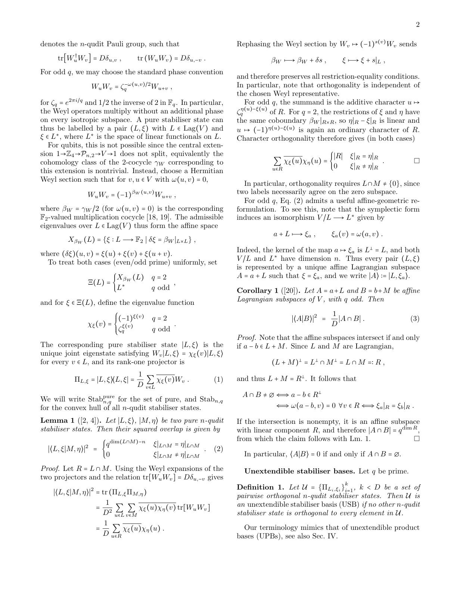
<figcaption class="paper-figure-caption"><b>Fig 1.</b> Low-resolution page preview, page 2</figcaption>
</figure>
<figure class="paper-figure-card">
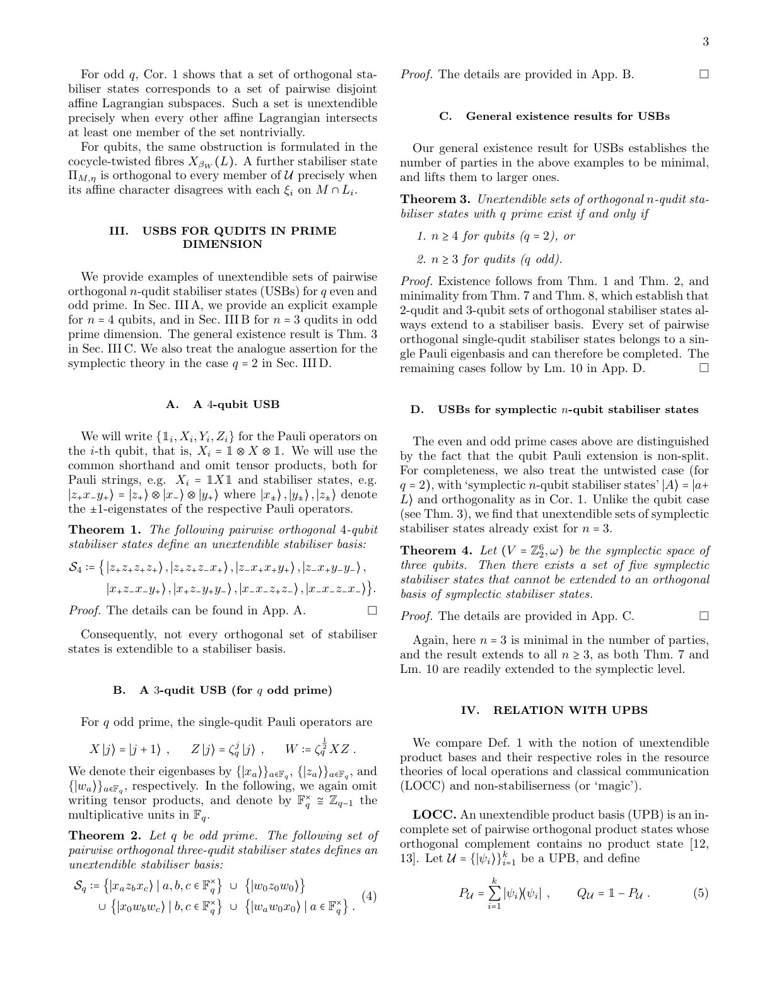
<figcaption class="paper-figure-caption"><b>Fig 2.</b> Low-resolution page preview, page 3</figcaption>
</figure>
<figure class="paper-figure-card">
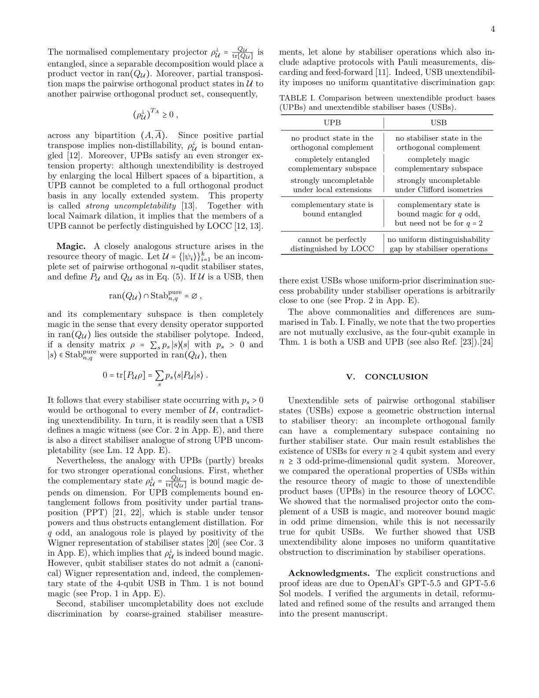
<figcaption class="paper-figure-caption"><b>Fig 3.</b> Low-resolution page preview, page 4</figcaption>
</figure>
<figure class="paper-figure-card">
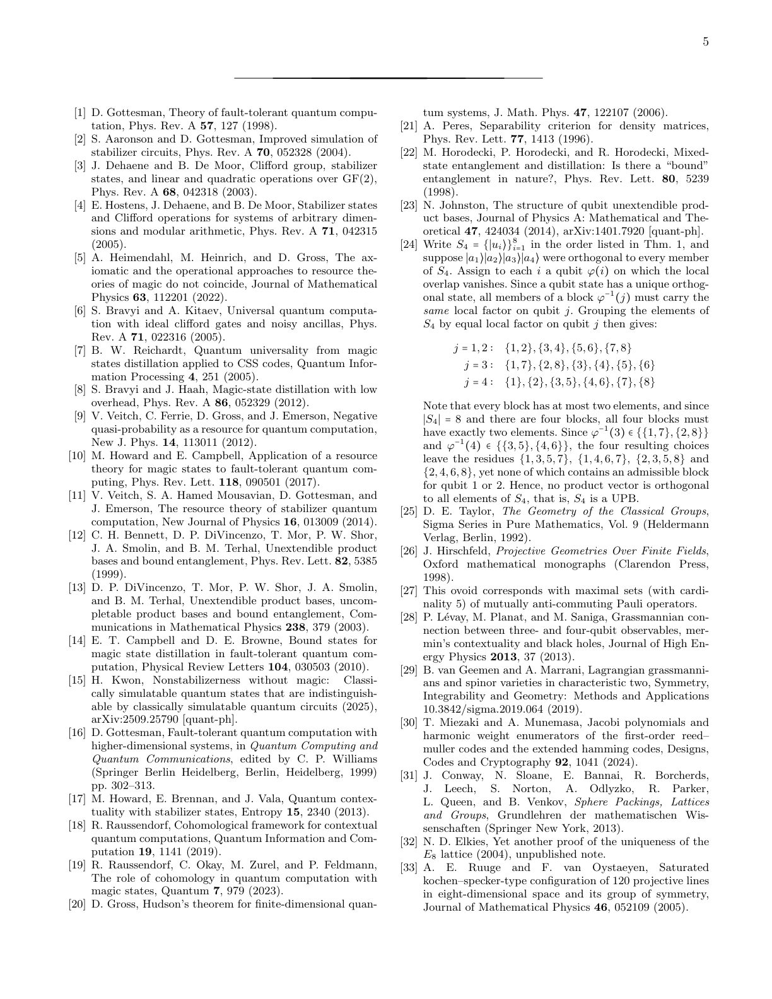
<figcaption class="paper-figure-caption"><b>Fig 4.</b> Low-resolution page preview, page 5</figcaption>
</figure>
<figure class="paper-figure-card">
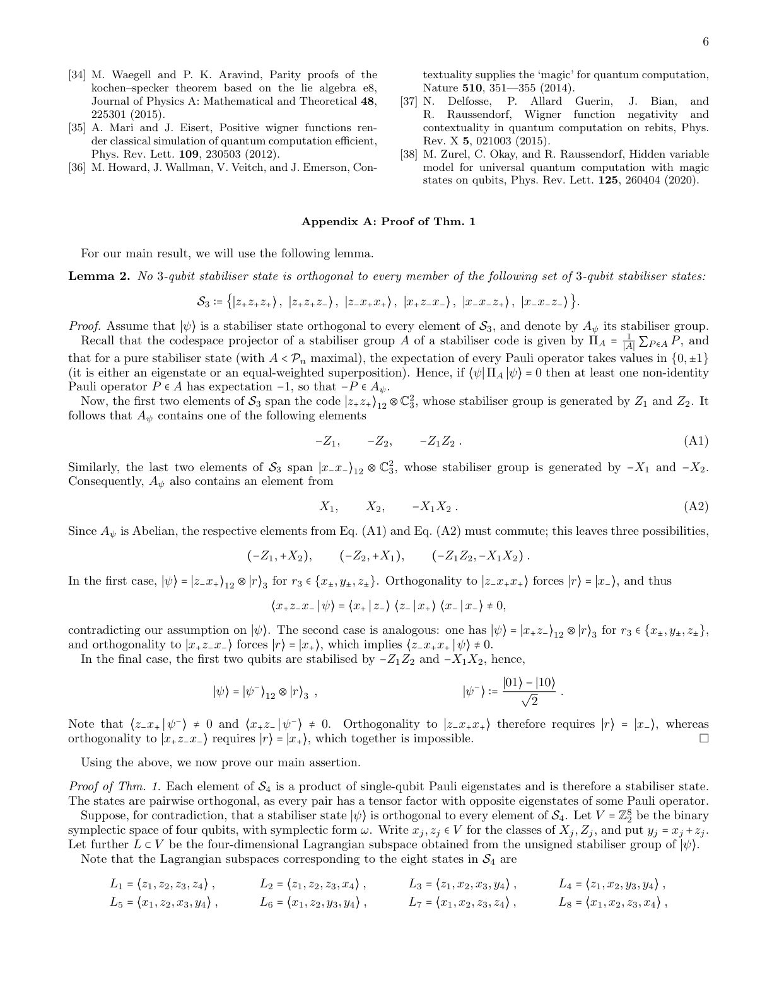
<figcaption class="paper-figure-caption"><b>Fig 5.</b> Low-resolution page preview, page 6</figcaption>
</figure>
</div>

<p><strong>Summary.</strong> This theoretical paper studies Unextendible Stabiliser Bases (USBs), which are incomplete sets of orthogonal stabiliser states. Using symplectic geometry, it proves their existence for general qubit and odd-prime qudit systems. The work is significant for showing that while USB unextendibility has deep mathematical consequences (like defining magic witnesses), it does not imply a universal quantitative barrier to distinguishing these states using stabilizer measurements.</p>
<p><strong>Why it may be interesting.</strong> It provides deep mathematical insights into the structure of quantum state spaces defined by stabilizer groups, which is fundamental to understanding quantum error correction codes and entanglement theory in qudit systems.</p>
<details>
<summary>Detailed structure</summary>
<p><strong>Main problem.</strong> The paper investigates Unextendible Stabiliser Bases (USBs), which are incomplete sets of orthogonal pure stabiliser states analogous to unextendible product bases (UPBs). It aims to characterize their properties, especially concerning resource theories like magic states.</p>
<p><strong>Main result.</strong> USBs exist for general qubit and qudit systems under certain dimensional constraints. Crucially, the paper shows that USB unextendibility alone does not impose a uniform quantitative obstruction to state discrimination by stabiliser operations.</p>
<p><strong>Method.</strong> The study employs tools from symplectic geometry applied to Pauli groups in finite fields ($\mathbb{F}_q$). Key techniques include constructing magic witnesses and analyzing the properties of the orthogonal complement subspace relative to UPBs/USBs.</p>
<p><strong>Model / system.</strong> The model is based on $n$-qudit stabiliser states defined within the framework of the Pauli group structure, analyzed using symplectic geometry. Comparisons are drawn between these stabilizer systems and product bases in quantum information theory.</p>
<p><strong>Key observables.</strong> Orthogonality of states ($\langle \cdot | \cdot 
angle$), existence/non-existence of extensions, magic monotone $M(
ho)$, and the success probability of stabiliser discrimination protocols ($p_{	ext{SO}}^{	ext{succ}}$).</p>
<p><strong>Important parameters / regimes.</strong> Local dimension $q$ (especially odd primes vs. $q=2$ for qubits), number of qudits/qubits ($n$), and ancillary system size ($m$).</p>
<p><strong>Assumptions / limitations.</strong> The analysis relies heavily on the mathematical structure provided by the symplectic form $\omega$ underlying the Pauli group, and comparisons are made assuming specific operational definitions (e.g., distillability).</p>
<p><strong>Figures summary.</strong> Not specified in the notes.</p>
<p><strong>Paper structure.</strong> The paper progresses from defining USBs as analogues of UPBs, providing explicit constructions for small systems (4 qubits, 3 qudits), establishing general existence theorems, and finally comparing resource-theoretic aspects like bound magic properties and discrimination capabilities against known results for UPBs.</p>
</details>
<details>
<summary>Abstract</summary>
<p>We study incomplete sets of orthogonal stabiliser states that cannot be extended by a further stabiliser state orthogonal to all of its members. Such sets are the stabiliser analogue of unextendible product bases (UPBs), and we thus call them unextendible stabiliser bases (USBs). Leveraging the symplectic geometry underlying the $n$-qudit Pauli group in prime local dimension, we explicitly construct USBs for systems of four qubits and three qudits of odd prime local dimension. Moreover, we show that these are the respective minimal qubit, respectively qudit numbers for which such bases exist, and that USBs exist for all $n\geq4$ qubit and for all $n\geq3$ odd-prime-dimensional qudit systems. Finally, we compare the resource-theoretic aspects of USBs with those of UPBs. We establish that, analogous to the case of UPBs, the orthogonal complement of every unextendible stabiliser set is a stabiliser-free subspace, and its normalised projector is necessarily magic; moreover, it is bound magic in odd prime dimension, yet need not be for qubits. We also show that USB unextendibility alone imposes no uniform quantitative obstruction to discrimination by stabiliser operations.</p>
</details>
<p><sub><a href="#top">↑ back to top</a></sub></p>
<h2 id="other-papers-6">Other papers (6)</h2>
<p><em>Papers from primary archives without highlighted authors or any topic match. Click to expand.</em></p>
<details>
<summary>Show other papers</summary>

<p><a id="paper-2608.10069"></a></p>
<h3 id="coupled-layer-codes-beyond-quantum-product-constructions"><a href="http://arxiv.org/abs/2608.10069v1">Coupled-Layer Codes: Beyond Quantum Product Constructions</a></h3>
<p><strong>Authors:</strong> Shuyu Zhang, Tzu-Chieh Wei, Nathanan Tantivasadakarn<br>
<strong>Type:</strong> theory · <strong>Category:</strong> quantum information and computing · <strong>PDF:</strong> <a href="https://arxiv.org/pdf/2608.10069v1">https://arxiv.org/pdf/2608.10069v1</a><br>
<strong>Analysis basis:</strong> full PDF text, analyzed in chunks</p>
<div class="figure-strip-hint">↔ Scroll figures horizontally</div>
<div class="paper-figures-scroll">
<figure class="paper-figure-card">
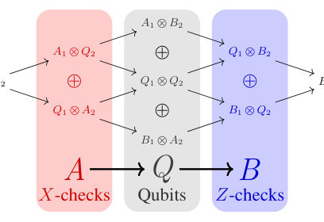
<figcaption class="paper-figure-caption"><b>Fig 1.</b> FIG. 1: The tensor product complex</figcaption>
</figure>
<figure class="paper-figure-card">
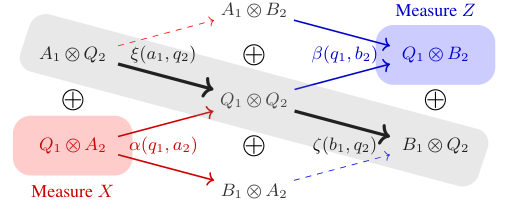
<figcaption class="paper-figure-caption"><b>Fig 2.</b> FIG. 2: The coupled layer construction of the tensor product code. Starting with stacks of CSS1 given by the complex in the gray band along with X{Z ancillas, Measuring X{Z-stabilizers given by the red/blue arrow (αpq1, a2q{βpq1, b2q) induces the blue/red dashed arrow, completing ζpb1, q2q{ξpa1, q2q.</figcaption>
</figure>
<figure class="paper-figure-card">
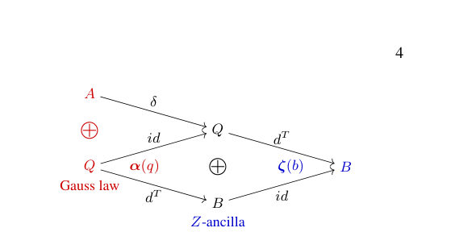
<figcaption class="paper-figure-caption"><b>Fig 3.</b> FIG. 3: The chain complex after gauging all X-stabilizers and X-logicals in CSS.</figcaption>
</figure>
<figure class="paper-figure-card">
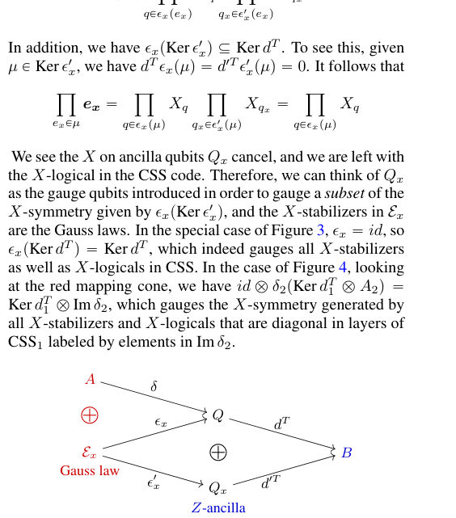
<figcaption class="paper-figure-caption"><b>Fig 4.</b> FIG. 5: The mapping cone for code surgery on X-logicals. The diagram commutes dT ϵx “ d1T ϵ1 x.</figcaption>
</figure>
<figure class="paper-figure-card">
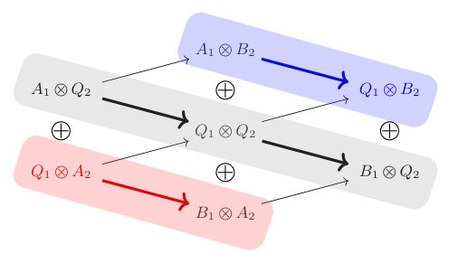
<figcaption class="paper-figure-caption"><b>Fig 5.</b> FIG. 4: The tensor product CSS1b CSS2 as a mapping cone. The gray band is layers of CSS1 indexed by Q2, giving CSS1 b Q2. The red band is an auxiliary complex with a chain map to CSS1 b Q2. Together with the gray band, they form the mapping cone. The blue band is another auxiliary complex with a chain map to the dual of CSS1 b Q2 upon transposing, which also forms a mapping cone. The two mapping cones together form the tensor product chain complex.</figcaption>
</figure>
</div>
<p><strong>Summary.</strong> This paper introduces 'coupled-layer codes' as a generalization of standard product constructions for building quantum error-correcting codes. By formalizing the coupling using excitation algebras and relating it to homological algebra concepts like mapping cones, the authors demonstrate how to generate non-CSS stabilizer codes. This advances the theoretical understanding of topological quantum computation by providing new methods to construct robust quantum codes.</p>
<p><strong>Why it may be interesting.</strong> It provides a powerful mathematical machinery (mapping cones, excitation algebras) to construct novel topological quantum codes that go beyond simple product constructions, which is crucial for realizing fault-tolerant quantum computation.</p>
<details>
<summary>Detailed structure</summary>
<p><strong>Main problem.</strong> To generalize quantum product constructions for building quantum error-correcting codes beyond standard CSS settings by introducing 'coupled-layer codes.'</p>
<p><strong>Main result.</strong> The coupled-layer construction provides a general framework to derive non-CSS stabilizer codes, reproducing models like the fermionic toric code and generalizing tensor products via mapping cone structures.</p>
<p><strong>Method.</strong> The method involves defining an excitation algebra and using an algebra-preserving map to condense Pauli excitations across multiple layers, relating the construction to homological concepts like the mapping cone.</p>
<p><strong>Model / system.</strong> The work focuses on Quantum Error-Correcting Codes (QECCs), specifically building upon product codes by coupling layers of stabilizer codes. The underlying mathematical structure involves chain complexes and gauging symmetries.</p>
<p><strong>Key observables.</strong> The resulting quantum error-correcting codes; the ability to produce non-CSS codes; commutation relations between various Pauli operators ($   ext{A}_p^{  ext{q}1},   ilde{f} ext{q}$, etc.).</p>
<p><strong>Important parameters / regimes.</strong> The structure of the underlying group $G$ and the specific coupling terms derived from the input CSS codes.</p>
<p><strong>Assumptions / limitations.</strong> The analysis relies on algebraic manipulations concerning overlaps between supports of Pauli operators, assuming certain commutation relations hold for simplification.</p>
<p><strong>Figures summary.</strong> Figures illustrate the tensor product complex structure (Fig. 1), the general coupled-layer construction via gauging (Fig. 2 &amp; 3), and the mathematical formalism using mapping cones to represent code products and surgeries (Fig. 4, 5, 6).</p>
<p><strong>Paper structure.</strong> The paper progresses from defining product codes to introducing the generalized coupled-layer concept. It then details the connection to gauging symmetries and homological algebra via mapping cones, culminating in detailed algebraic proofs of commutation relations for the resulting operators.</p>
</details>
<details>
<summary>Abstract</summary>
<p>Product codes are an important class of quantum error-correcting codes constructed from multiple input codes, which can give rise to asymptotically good quantum low-density parity check codes. In previous work, we showed how the product between two codes can be physically implemented by coupling layers of the first code using checks of the second code. In this work, we further unify product code constructions with coupled-layer constructions of phases of matter by introducing coupled-layer codes. The essential strategy is to condense general excitations created by Pauli operators among multiple decoupled layers of the first code. The condensation is specified by an excitation algebra, which encodes the excitations, along with an algebra-preserving map. This coupling between layers generalizes the notion of gauging in physics as well as the mapping cone in homological algebra, and can be used to produce non-CSS codes. As examples, we show how coupled-layer codes reproduce the X-cube and Chamon models. We further generalize the balanced product code by allowing a unitary transformation in addition to a group action by free permutation and describe its corresponding coupled-layer construction. In particular, we show how balancing by a ZX-duality can reproduce non-CSS codes such as the fermionic toric code and the 3-fermion Walker-Wang model in 3D.</p>
</details>
<p><sub><a href="#top">↑ back to top</a></sub></p>

<p><a id="paper-2608.10912"></a></p>
<h3 id="css-quantum-lrcs-with-intersecting-recovery-sets-constructions-and-bounds"><a href="http://arxiv.org/abs/2608.10912v1">CSS Quantum LRCs with Intersecting Recovery Sets: Constructions and Bounds</a></h3>
<p><strong>Authors:</strong> Evagoras Stylianou, Vinayak Ramkumar, Holger Boche, Rawad Bitar<br>
<strong>Type:</strong> theory · <strong>Category:</strong> quantum information and computing · <strong>PDF:</strong> <a href="https://arxiv.org/pdf/2608.10912v1">https://arxiv.org/pdf/2608.10912v1</a><br>
<strong>Analysis basis:</strong> full PDF text, analyzed in chunks</p>
<div class="figure-strip-hint">↔ Scroll figures horizontally</div>
<div class="paper-figures-scroll">
<figure class="paper-figure-card">
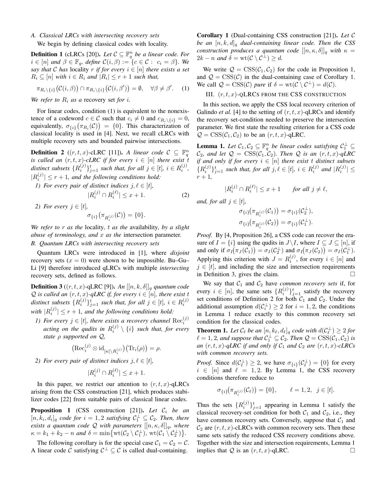
<figcaption class="paper-figure-caption"><b>Fig 1.</b> Low-resolution page preview, page 2</figcaption>
</figure>
<figure class="paper-figure-card">
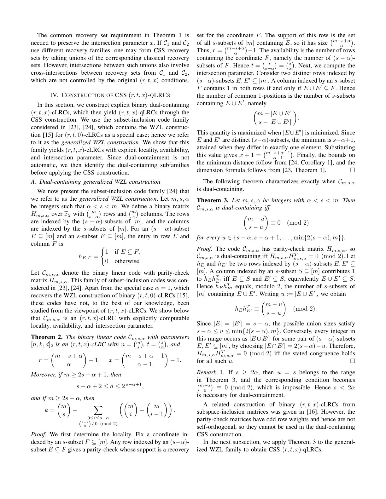
<figcaption class="paper-figure-caption"><b>Fig 2.</b> Low-resolution page preview, page 3</figcaption>
</figure>
<figure class="paper-figure-card">
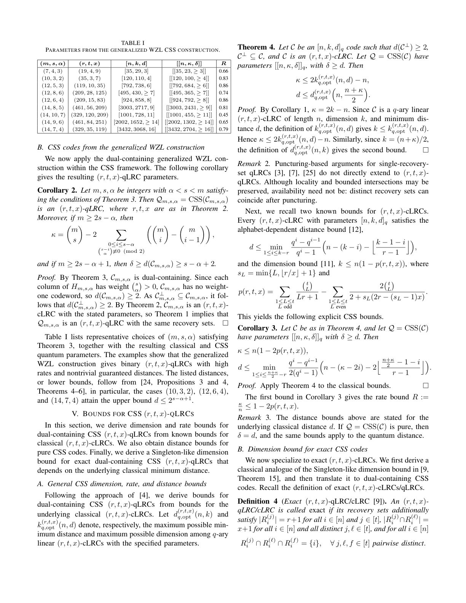
<figcaption class="paper-figure-caption"><b>Fig 3.</b> Low-resolution page preview, page 4</figcaption>
</figure>
<figure class="paper-figure-card">
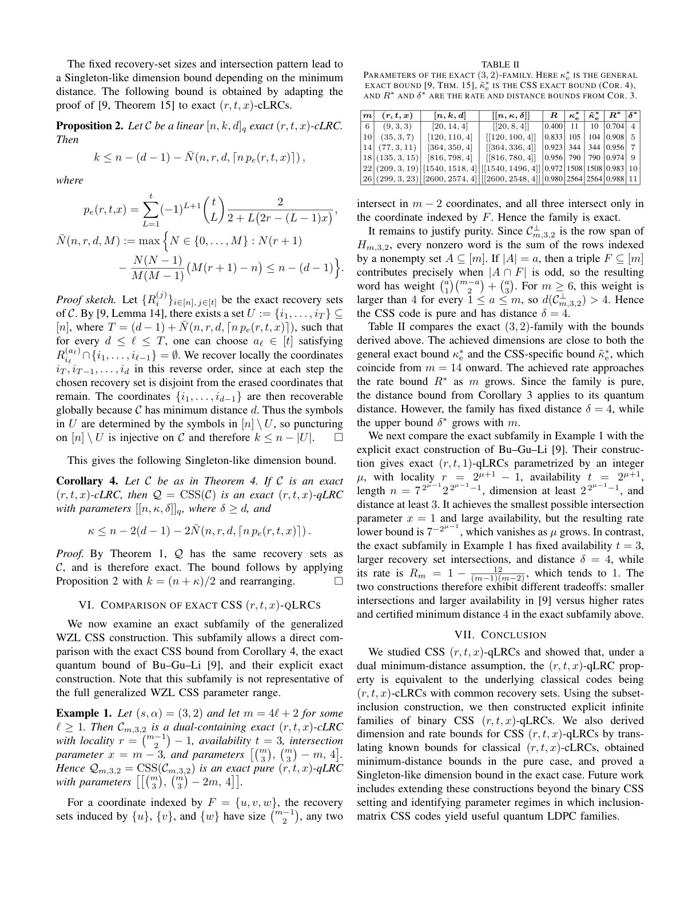
<figcaption class="paper-figure-caption"><b>Fig 4.</b> Low-resolution page preview, page 5</figcaption>
</figure>
<figure class="paper-figure-card">
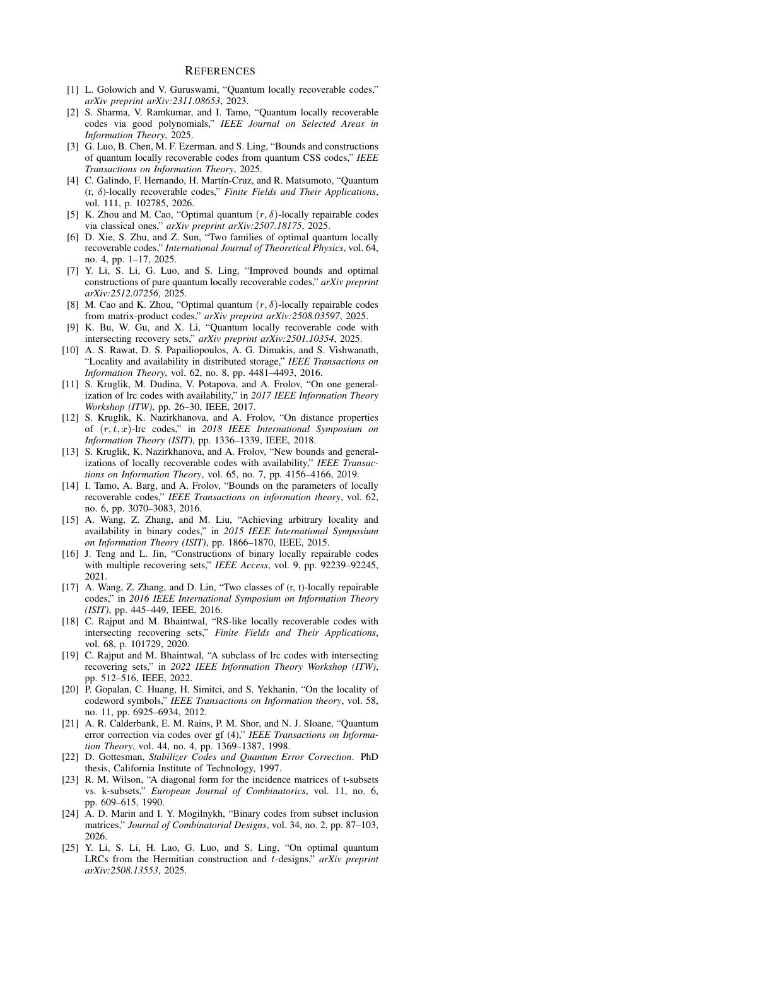
<figcaption class="paper-figure-caption"><b>Fig 5.</b> Low-resolution page preview, page 6</figcaption>
</figure>
</div>
<p><strong>Summary.</strong> This paper develops the theory and explicit constructions for Quantum Locally Recoverable Codes (qLRCs) characterized by parameters $(r, t, x)$. It shows that these quantum codes can be derived from classical LRCs via the CSS construction. The main contribution is deriving tight upper bounds on the code rate and dimension, alongside providing concrete families of such codes.</p>
<p><strong>Why it may be interesting.</strong> This work provides rigorous mathematical tools and concrete constructions for advanced quantum error correcting codes that go beyond standard stabilizer or distance-based requirements by incorporating locality constraints.</p>
<details>
<summary>Detailed structure</summary>
<p><strong>Main problem.</strong> The work focuses on constructing and deriving bounds for quantum locally recoverable codes (qLRCs) with specific parameters $(r, t, x)$. It establishes the necessary and sufficient conditions for a CSS code to achieve this structure.</p>
<p><strong>Main result.</strong> Explicit families of binary dual-containing classical LRCs are constructed using subset-inclusion matrices, which yield corresponding quantum qLRCs. Upper bounds on the dimension and rate for these codes are derived.</p>
<p><strong>Method.</strong> The authors utilize the CSS construction to translate known results from classical locally recoverable codes (cLRCs) into the quantum domain. They derive bounds by analyzing puncturing techniques applied to the underlying classical code structure.</p>
<p><strong>Model / system.</strong> The model is Quantum Error Correction, specifically focusing on $(r, t, x)$-qLRCs built via the CSS construction from binary linear codes $C$. The parameters involve locality ($r$), availability ($t$), and intersection parameter ($x$).</p>
<p><strong>Key observables.</strong> Code dimension ($\kappa$), code rate (R), minimum distance ($\delta$), and the specific parameters $(r, t, x)$.</p>
<p><strong>Important parameters / regimes.</strong> Locality $r$, availability $t$, intersection parameter $x$, and the underlying classical code structure defined by parameters $(m, s, \alpha)$ in the construction.</p>
<p><strong>Assumptions / limitations.</strong> The primary assumption for the necessary and sufficient condition is that the underlying classical codes have a dual minimum distance of at least two. The constructions also rely on the resulting classical code being dual-containing.</p>
<p><strong>Figures summary.</strong> TABLE I lists representative parameters $(m, s, \alpha)$ satisfying the required conditions and provides the corresponding quantum code parameters $[[n, \kappa, \delta]]_q$.</p>
<p><strong>Paper structure.</strong> The paper first establishes the equivalence between CSS qLRCs and cLRCs (Theorem 1). It then details a construction method using subset-inclusion matrices to generate explicit cLRCs. Finally, it derives general upper bounds and specific Singleton-like dimension bounds for the resulting quantum codes.</p>
</details>
<details>
<summary>Abstract</summary>
<p>In this work, we study $(r,t,x)$ quantum locally recoverable codes (qLRCs) with locality $r$, $t$ recovery sets per qudit, and intersection parameter $x$. We first show that, assuming the underlying classical codes have dual minimum distance at least two, a CSS code is an $(r,t,x)$-qLRC if and only if the underlying classical codes are $(r,t,x)$ classical LRCs (cLRCs) with common recovery sets. We then use subset-inclusion matrices to construct families of binary dual-containing $(r,t,x)$-cLRCs, which yield binary $(r,t,x)$-qLRCs via the CSS construction. For CSS $(r,t,x)$-qLRCs, we derive upper bounds on the dimension and rate, minimum-distance bounds in the pure case, and a Singleton-like dimension bound in the exact case. Finally, we show that these families attain high rates and nontrivial minimum distances.</p>
</details>
<p><sub><a href="#top">↑ back to top</a></sub></p>

<p><a id="paper-2608.11104"></a></p>
<h3 id="exact-expressions-of-entropy-for-classical-non-interacting-many-body-systems"><a href="http://arxiv.org/abs/2608.11104v1">Exact Expressions of Entropy for Classical Non-interacting Many-body Systems</a></h3>
<p><strong>Authors:</strong> Yuheng Wu, Henrik Heelweg, Rigel Galgana<br>
<strong>Type:</strong> theory · <strong>Category:</strong> statistical mechanics · <strong>PDF:</strong> <a href="https://arxiv.org/pdf/2608.11104v1">https://arxiv.org/pdf/2608.11104v1</a><br>
<strong>Analysis basis:</strong> full PDF text, analyzed in chunks</p>
<div class="figure-strip-hint">↔ Scroll figures horizontally</div>
<div class="paper-figures-scroll">
<figure class="paper-figure-card">
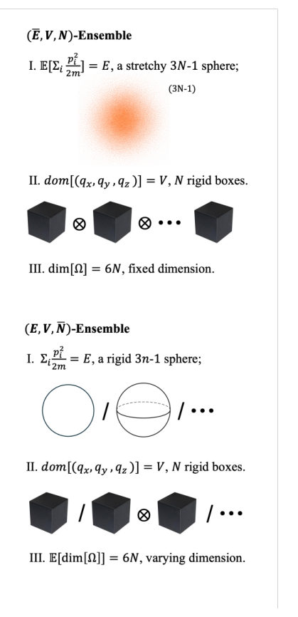
<figcaption class="paper-figure-caption"><b>Fig 1.</b> Fig 1 Schematics of the state space and constraints for the four representative ensembles.</figcaption>
</figure>
<figure class="paper-figure-card">
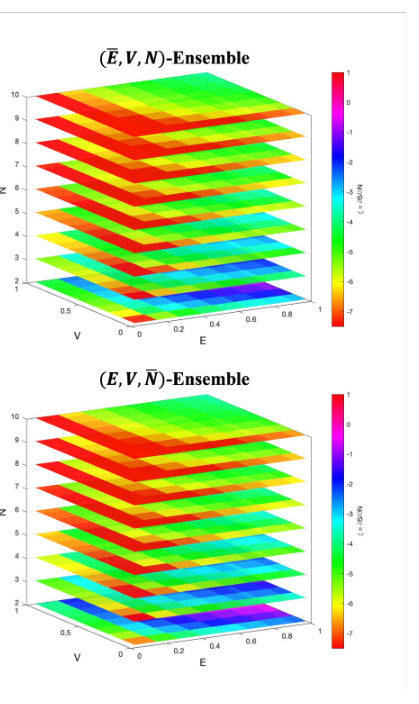
<figcaption class="paper-figure-caption"><b>Fig 2.</b> Fig 2 The values of ϕ in the four representative ensembles as functions of E, V, N.</figcaption>
</figure>
</div>
<p><strong>Summary.</strong> This work develops a universal statistical mechanics theory to calculate the exact entropy for finite classical many-body systems across all relevant ensembles. By applying maximum entropy principles based on two core physical postulates, the authors show that while ensemble properties differ at small sizes, they converge correctly to established thermodynamic limits. This provides a rigorous framework for understanding finite-size effects in statistical physics.</p>
<p><strong>Why it may be interesting.</strong> While focused on classical systems, establishing rigorous, non-asymptotic ensemble equivalence is foundational. The methodology of deriving fundamental quantities from minimal postulates (stationarity/unbiasedness) has parallels in defining quantum equilibrium states.</p>
<details>
<summary>Detailed structure</summary>
<p><strong>Main problem.</strong> To develop a universal ensemble theory that provides exact expressions for entropy for classical non-interacting many-body systems, resolving discrepancies in thermodynamic properties among different ensembles when the system is finite.</p>
<p><strong>Main result.</strong> The derived entropy expressions across various statistical ensembles are shown to converge asymptotically to a common limit in the thermodynamic limit, confirming ensemble equivalence while rigorously quantifying finite-size corrections.</p>
<p><strong>Method.</strong> The theory uses maximum entropy optimization based on two postulates: stationarity and unbiasedness, applied to four representative thermodynamic ensembles.</p>
<p><strong>Model / system.</strong> The system is modeled as classical non-interacting many-body particles governed by a simple quadratic Hamiltonian (L = sum(p_i^2/2m)).</p>
<p><strong>Key observables.</strong> Entropy (S), Temperature (T), Pressure (P), Chemical Potential (mu), and the ensemble-dependent intensive variables.</p>
<p><strong>Important parameters / regimes.</strong> System size (N, V), Energy (E), and the thermodynamic limit ($N 	o \infty$).</p>
<p><strong>Assumptions / limitations.</strong> The system is assumed to be a regular Hamiltonian system, and the analysis relies on extending beyond the standard thermodynamic limit approximation.</p>
<p><strong>Figures summary.</strong> Figure 1 schematics illustrate the state space constraints for four representative ensembles. Figure 2 illustrates the ensemble dependence of intensive variables like chemical potential ($\partial S / \partial N$).</p>
<p><strong>Paper structure.</strong> The paper first establishes the need for a universal theory to address finite-size effects, then derives exact entropy expressions for four key ensembles using maximum entropy principles, and finally proves the asymptotic equivalence of these results in the thermodynamic limit.</p>
</details>
<details>
<summary>Abstract</summary>
<p>In the thermodynamic limit, the equilibrium state of a many-body system can be characterized by three pairs of conjugate thermodynamic variables: $E/T,V/P,N/μ$. In this limit, the thermodynamic properties in all ensembles are equivalent up to the leading order of $E,V,N$. However, for systems of finite size, this ensemble equivalence is no longer exact, and the thermodynamic properties may differ substantially among ensembles. To quantify these finite-size effects rigorously, it is desirable to develop a universal ensemble theory applicable to systems of arbitrary size, providing exact expressions for entropy and, thereby, giving rise to the precise value of all equilibrium thermodynamic quantities. In this work, we propose a theory that determines the exact entropy expressions for classical non-interacting many-body systems of arbitrary size across all statistical ensembles, based on only two postulates: \textbf{stationarity}, requiring that the physical laws be invariant under time translation, and \textbf{unbiasedness}, requiring that the equilibrium mixed state maximize the entropy subject to the prescribed constraints. Moreover, we show that the entropy expressions obtained in different ensembles converge to the common asymptotic form $S \asymp \ln\!\left( \left( \frac{4πm e E}{3N} \right)^{3N/2} \cdot \left(\frac{V}{N}\right)^N \right)+N$, consistent with the predictions of the large deviation theory.</p>
</details>
<p><sub><a href="#top">↑ back to top</a></sub></p>

<p><a id="paper-2608.10882"></a></p>
<h3 id="from-pattern-detection-to-composition-analysis-in-quantum-software"><a href="http://arxiv.org/abs/2608.10882v1">From Pattern Detection to Composition Analysis in Quantum Software</a></h3>
<p><strong>Authors:</strong> Neilson Carlos Leite Ramalho, Erico Augusto da Silva, Anthony Accioly, Higor Amario de Souza, Marcos Lordello Chaim<br>
<strong>Type:</strong> theory · <strong>Category:</strong> other · <strong>PDF:</strong> <a href="https://arxiv.org/pdf/2608.10882v1">https://arxiv.org/pdf/2608.10882v1</a><br>
<strong>Analysis basis:</strong> full PDF text, analyzed in chunks</p>
<div class="figure-strip-hint">↔ Scroll figures horizontally</div>
<div class="paper-figures-scroll">
<figure class="paper-figure-card">
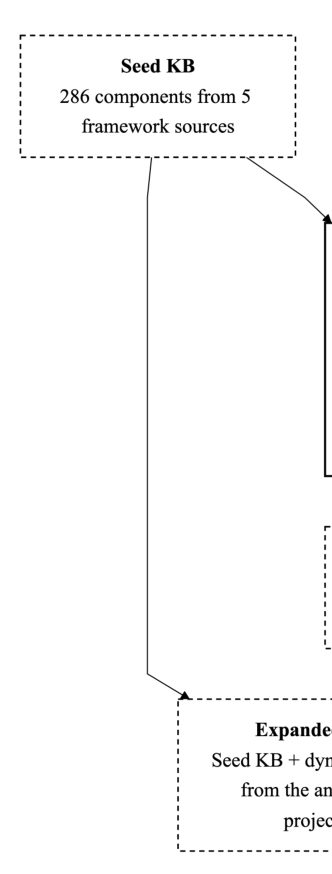
<figcaption class="paper-figure-caption"><b>Fig 1.</b> Fig. 1: Vocabulary expansion. qpa builds project-specific dynamic KBs and combines them with the seed KB before notebook analysis.</figcaption>
</figure>
<figure class="paper-figure-card">
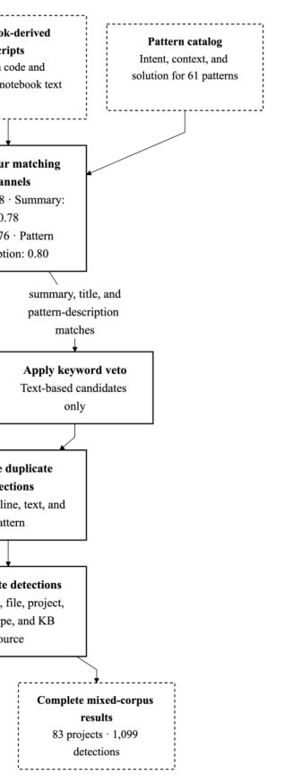
<figcaption class="paper-figure-caption"><b>Fig 2.</b> Fig. 2: Pattern detection and aggregation. qpa applies four matching channels, filters text-based candidates, removes duplicate detections, and aggregates the results.</figcaption>
</figure>
<figure class="paper-figure-card">
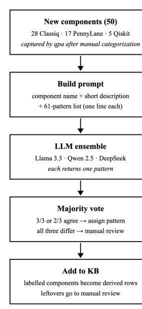
<figcaption class="paper-figure-caption"><b>Fig 3.</b> Fig. 3: Automated pattern categorization with an LLM ensemble. The new compo- nents collected by the tool after the manual categorization are turned into a prompt (the component name, its documentation summary, and the 61-pattern list), classified independently by three models from different providers (Llama 3.3, Qwen 2.5, and DeepSeek), and combined by majority vote: a component on which at least two mod- els agree receives that pattern, while a component on which all three differ is left for manual review.</figcaption>
</figure>
<figure class="paper-figure-card">
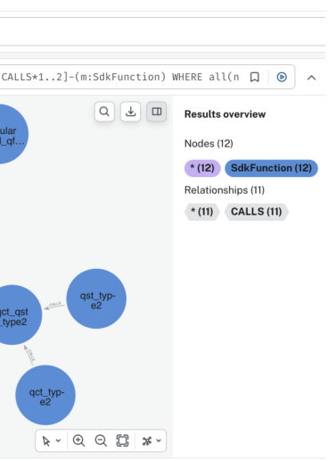
<figcaption class="paper-figure-caption"><b>Fig 4.</b> Fig. 4: Framework components connected to qft in the Classiq SDK call graph. An arrow points from a function to a function it calls. The view includes the functions qft calls, the functions that call qft, and one further level of callers, showing how qft acts as a shared building block reused by higher-level routines such as phase estimation and modular arithmetic.</figcaption>
</figure>
<figure class="paper-figure-card">
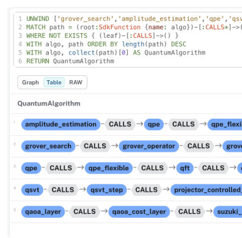
<figcaption class="paper-figure-caption"><b>Fig 5.</b> Fig. 5: Decomposition of five well-known algorithms into ordered chains of sub- routines in the Classiq SDK: Grover search, amplitude estimation, quantum phase estimation, QSVT, and QAOA. Each chain follows the calls made inside the source code of a high-level function down to the lowest-level public function, showing both the composition of each algorithm and the sub-routines shared between them.</figcaption>
</figure>
</div>
<p><strong>Summary.</strong> This paper analyzes how reusable design patterns are actually implemented in open-source quantum software by building advanced mining tools. It extends pattern detection to composition analysis using graph databases to map component call structures. This work provides a critical resource (qpa pipeline and knowledge base) for understanding the practical adoption and architectural evolution of quantum algorithms.</p>
<p><strong>Why it may be interesting.</strong> While not directly about physical Hamiltonians, understanding the software architecture and limitations of quantum programming tools is crucial for developing scalable algorithms that can be physically realized or simulated efficiently.</p>
<details>
<summary>Detailed structure</summary>
<p><strong>Main problem.</strong> The research moves beyond simple detection of quantum software patterns to analyze their composition, understanding how high-level abstractions are assembled in practice.</p>
<p><strong>Main result.</strong> The authors successfully built a pipeline that analyzes pattern usage across 80 open-source projects and constructed composition graphs showing the internal assembly logic of these patterns within quantum frameworks.</p>
<p><strong>Method.</strong> They developed an enhanced mining tool (qpa) that uses multiple matching channels and vocabulary expansion, coupled with building graph databases to map component call relationships.</p>
<p><strong>Model / system.</strong> The focus is on quantum software development using existing frameworks (like Qiskit), treating the framework components as the system being analyzed rather than a physical Hamiltonian or state.</p>
<p><strong>Key observables.</strong> Pattern occurrence frequency, detection accuracy (micro-F1 score), and call relationships within composition graphs (direct vs. internal calls).</p>
<p><strong>Important parameters / regimes.</strong> The catalog size (61 patterns) and the number of analyzed projects (80).</p>
<p><strong>Assumptions / limitations.</strong> The analysis assumes that framework components can be reliably mapped to abstract quantum software patterns, and that LLMs can semi-automatically classify new components.</p>
<p><strong>Paper structure.</strong> The paper progresses from establishing the need for composition analysis over simple detection, detailing the enhancement of the mining tool (qpa), presenting quantitative accuracy results, and finally using composition graphs to analyze pattern assembly logic.</p>
</details>
<details>
<summary>Abstract</summary>
<p>Quantum software patterns provide high-level abstractions for building quantum programs, but there is still little empirical evidence on how they are adopted in practice. In prior work, we extended an existing quantum-pattern atlas into a 61-pattern catalog, created a knowledge base that links framework components to those patterns, and built a tool that mines pattern implementations from open-source code. We applied this tool on 80 projects and find that all 23 patterns occur in practice. In this work, we extend the tool with two additional matching channels and a vocabulary expansion step, and execute a quantitative evaluation of its accuracy on Qrisp, a framework not present in the knowledge base, reaching a micro-F1 of 0.712 against 0.449 without the expansion step. We then construct composition graphs that record calls among the high-level framework components associated with patterns and store them in a graph database. We use these graphs to examine how pattern implementations are assembled inside each framework, why patterns co-occur, and how much of a pattern's detection count comes from components called directly by developers rather than introduced through internal framework calls. We release qpa, an open-source mining pipeline, together with the knowledge base, which maps 286 framework components across five sources to the pattern catalog, maintained with the support of an LLM ensemble that classifies newly extracted components, and the resulting pattern usage dataset, to support reproducible studies on the adoption and evolution of quantum patterns.</p>
</details>
<p><sub><a href="#top">↑ back to top</a></sub></p>

<p><a id="paper-2608.10671"></a></p>
<h3 id="quantum-computing-for-industrial-electromagnetics-applicability-and-case-studies-in-solving-maxwells-equations"><a href="http://arxiv.org/abs/2608.10671v1">Quantum Computing for Industrial Electromagnetics: Applicability and Case Studies in Solving Maxwell's Equations</a></h3>
<p><strong>Authors:</strong> Francesco Turro, Marco Maronese, Daniele Dragoni<br>
<strong>Type:</strong> theory · <strong>Category:</strong> quantum information and computing · <strong>PDF:</strong> <a href="https://arxiv.org/pdf/2608.10671v1">https://arxiv.org/pdf/2608.10671v1</a><br>
<strong>Analysis basis:</strong> full PDF text, analyzed in chunks</p>
<div class="figure-strip-hint">↔ Scroll figures horizontally</div>
<div class="paper-figures-scroll">
<figure class="paper-figure-card">
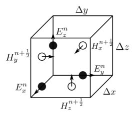
<figcaption class="paper-figure-caption"><b>Fig 1.</b> FIG. 1: Schematic picture of electric and magnetic fields in the Yee lattice formulation</figcaption>
</figure>
<figure class="paper-figure-card">
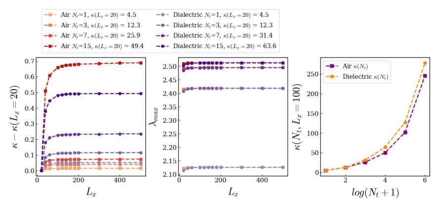
<figcaption class="paper-figure-caption"><b>Fig 2.</b> FIG. 2: Condition number κ (left panel) and maximum eigenvalue λmax (center panel) of the one-dimensional FDTD evolution matrix as functions of lattice size Lx for different numbers of time steps Nt = 1, 3, 7, 15. Square markers denote propagation in air, while circles correspond to a configuration with a dielectric region of relative permittivity ϵr = 4 occupying the second half of the domain (x ≥Lx/2). Different colors corresponds to different evolution times. The right panel shows the condition number computed at Lx = 100 as a function of log2(Nt + 1), specifically, the purple squares corresponds for the air configuration, dark orange circles for the dielectric system.</figcaption>
</figure>
<figure class="paper-figure-card">
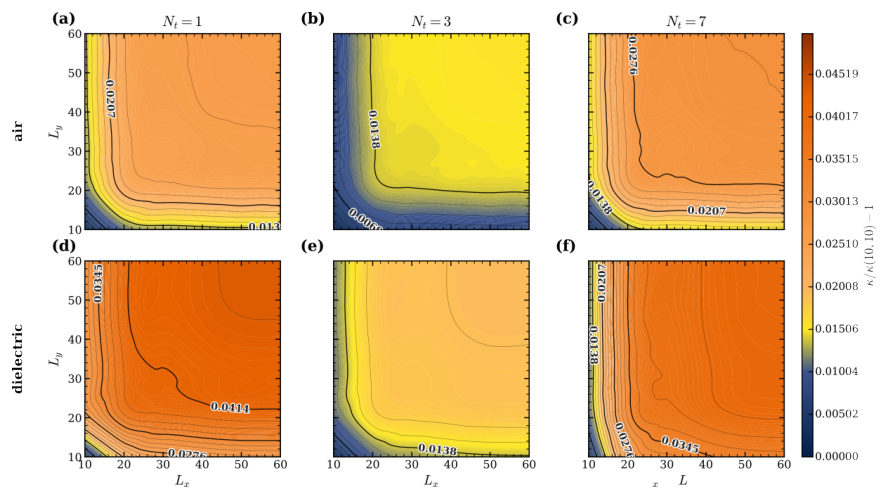
<figcaption class="paper-figure-caption"><b>Fig 3.</b> FIG. 3: Condition number κ of the linear FDTD matrix as a function of the lattice sizes Lx and Ly, for different evolving time steps Nt = 1, 3, 7 ( panel (a) and (d) for Nt = 1, panel (b) and (e) for Nt = 3,panel (c) and (f) for Nt = 7). The (a),(b), (c) panels report the results correspond for the propagation in air, whereas the (d),(e), (f) panels show the results for a configuration in which the quadrant defined by x ≥Lx/2 and y ≥Ly/2 has relative permittivity ϵr = 4, while the remaining region is filled with air.</figcaption>
</figure>
<figure class="paper-figure-card">
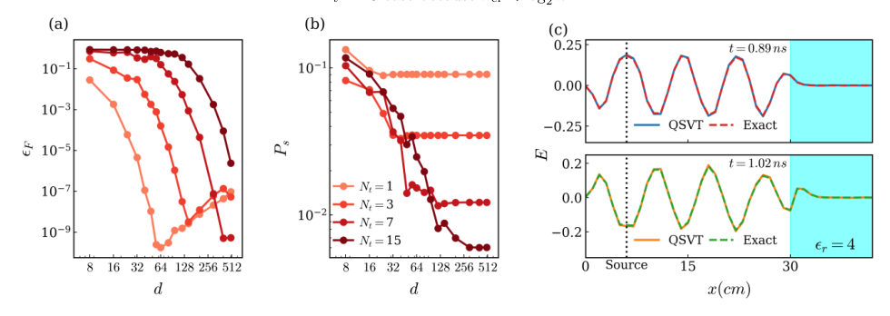
<figcaption class="paper-figure-caption"><b>Fig 4.</b> FIG. 4: Performance results of HHL-FDTD and QSVT-FDTD methods for a one-dimensional grid with Lx = 42 lattice points, including a dielectric material placed from site 30 to the end of the chain. The upper and lower right panels in both subfigures show the obtained electric field using the two solvers for the Nt = 15 case at t = 80 and t = 92, respectively, corresponding to when the wave enters the dielectric and after it has entered. The dashed lines represent the analytical electric fields. The vertical dashed lines indicate the position of the source emitting a plane wave, while the cyan box denotes the dielectric material with ϵr = 4.</figcaption>
</figure>
<figure class="paper-figure-card">
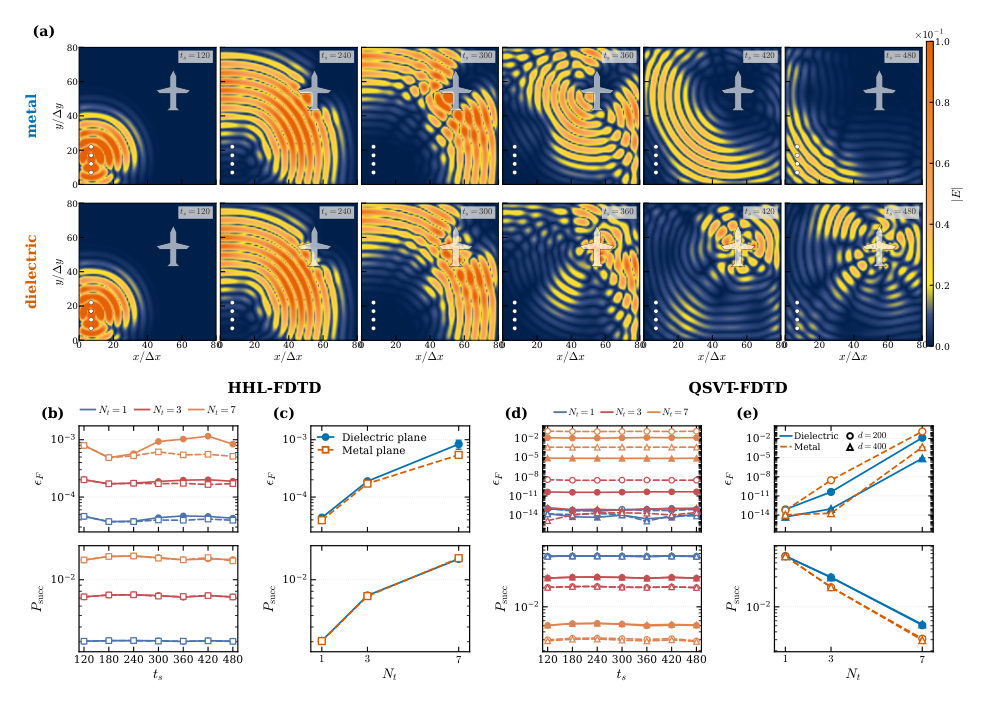
<figcaption class="paper-figure-caption"><b>Fig 5.</b> FIG. 5: Performance of the HHL-FDTD and QSVT-FDTD methods for the simulation of radar-signal propagation around two aircraft models: a metallic aircraft with perfect electric conductor (PEC) boundary conditions (diamonds) and a dielectric aircraft with relative permittivity ϵr = 4 (circles). Panels (a) display the electric-field distributions for representative time steps. White circles indicate the source locations, while the gray polygons denote the aircraft geometry. In the upper field maps, the aircraft is made of metal; in the lower field maps, it is made of dielectric material. Panel (b): Error fidelity (top) and success probability (bottom) of the HHL-FDTD method as functions of the...</figcaption>
</figure>
</div>
<p><strong>Summary.</strong> This paper investigates using quantum computing algorithms, specifically QSVT and HHL, to solve the massive linear systems generated by simulating Maxwell's equations via FDTD. The research validates these approaches on industrial electromagnetics problems, showing that QSVT is superior and that resource scaling remains manageable even for very large physical domains.</p>
<p><strong>Why it may be interesting.</strong> This work directly applies advanced quantum linear algebra techniques (QSVT/HHL) to a canonical problem in computational physics (electromagnetics), providing concrete benchmarks for near-term quantum advantage claims in applied science.</p>
<details>
<summary>Detailed structure</summary>
<p><strong>Main problem.</strong> The primary challenge is accelerating computationally intensive simulations of electromagnetics, specifically solving large linear systems derived from Maxwell's equations.</p>
<p><strong>Main result.</strong> The study demonstrates that the Quantum Singular Value Transformation (QSVT) algorithm consistently achieves higher accuracy than HHL for these tasks. Crucially, it shows that the system matrix condition number saturates with increasing spatial grid size, allowing scaling to realistic industrial dimensions without prohibitive resource growth.</p>
<p><strong>Method.</strong> The authors map the time-stepping evolution of the Finite-Difference Time-Domain (FDTD) method into a linear system ($  ilde{A}\mathbf{x} = \mathbf{b}$) and then apply quantum algorithms like HHL and QSVT to solve this system efficiently.</p>
<p><strong>Model / system.</strong> The physical model is electromagnetics governed by Maxwell's equations, simulated using the FDTD method on lattices. The mathematical core involves solving the resulting large, sparse linear system matrix $  ilde{A}$.</p>
<p><strong>Key observables.</strong> Quantum-state fidelity ($\epsilon_F$), algorithmic success probability ($P_s$), and the condition number ($\kappa$) of the system matrix.</p>
<p><strong>Important parameters / regimes.</strong> The required qubits scale logarithmically with spatial size and time steps; performance is critically dependent on $\kappa$ and the approximation degree $d$.</p>
<p><strong>Assumptions / limitations.</strong> Simplifications include assuming lossless materials, frequency-independent $\epsilon$ and $\mu$, and using Perfectly Matched Layers (PML) boundary conditions.</p>
<p><strong>Figures summary.</strong> Figures illustrate schematics of field formulations (Yee lattice), circuit diagrams for HHL/QSVT, and plots showing the condition number's independence from large lattice sizes ($L_x$), as well as performance metrics vs. lattice size.</p>
<p><strong>Paper structure.</strong> The paper first establishes the physical problem (Maxwell's equations via FDTD) and reformulates it into a linear system. It then details the application of quantum algorithms (HHL, QSVT) to solve this system, benchmarking them across industrial use cases like radar propagation.</p>
</details>
<details>
<summary>Abstract</summary>
<p>Computational electromagnetics plays a central role in many industrial applications but often requires substantial computational resources, particularly when fine spatial discretizations are needed. While classical approaches remain the standard, quantum computing offers the potential to accelerate large-scale simulations by encoding them with a limited number of qubits.   Here, we investigate the performance and resource scaling of the Harrow-Hassidim-Lloyd (HHL) and Quantum Singular Value Transformation (QSVT) algorithms for solving linear systems generated by the finite-difference time-domain (FDTD) method, a widely adopted numerical scheme for discretizing Maxwell's equations. We benchmark their performance across representative industrial use cases, including radar propagation, lens simulations, and beamforming processes. Our results demonstrate the validity of the approaches, achieving state infidelities smaller than $2\cdot 10^{-3}$ with success probabilities greater than $10^{-3}$, compatible with practical quantum state sampling. Overall, we observe that the QSVT method consistently delivers higher accuracy.   We further observe that the condition number of the linear matrix, a key factor governing the performance of quantum solvers, saturates as the number of spatial lattice points increases. This implies that the spatial grid can be scaled to realistic industrial dimensions without increasing the HHL or QSVT circuit depth due to ill-conditioned matrices.</p>
</details>
<p><sub><a href="#top">↑ back to top</a></sub></p>

<p><a id="paper-2608.10972"></a></p>
<h3 id="verifying-full-quantum-network-nonlocality-in-arbitrary-configurations-by-nonlinear-bell-like-inequalities"><a href="http://arxiv.org/abs/2608.10972v1">Verifying full quantum network nonlocality in arbitrary configurations by nonlinear Bell-like inequalities</a></h3>
<p><strong>Authors:</strong> Shuyuan Yang, Jinchuan Hou, Kan He, Mingxing Luo<br>
<strong>Type:</strong> theory · <strong>Category:</strong> quantum information and computing · <strong>PDF:</strong> <a href="https://arxiv.org/pdf/2608.10972v1">https://arxiv.org/pdf/2608.10972v1</a><br>
<strong>Analysis basis:</strong> full PDF text, analyzed in chunks</p>
<div class="figure-strip-hint">↔ Scroll figures horizontally</div>
<div class="paper-figures-scroll">
<figure class="paper-figure-card">
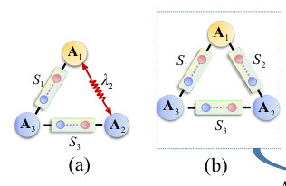
<figcaption class="paper-figure-caption"><b>Fig 1.</b> Figure 1. The triangular quantum network consists of three sources</figcaption>
</figure>
<figure class="paper-figure-card">
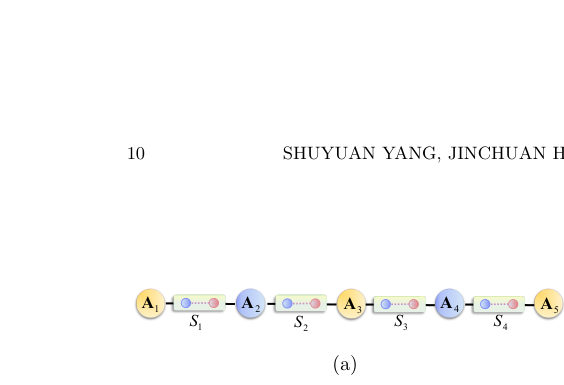
<figcaption class="paper-figure-caption"><b>Fig 2.</b> Figure 2. (a) Chain network in which parties Ai and Ai+1 share an</figcaption>
</figure>
<figure class="paper-figure-card">
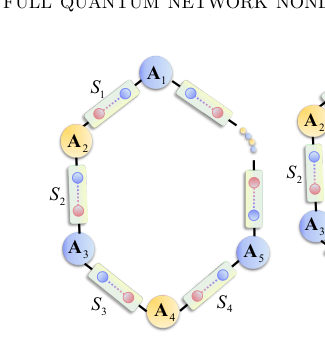
<figcaption class="paper-figure-caption"><b>Fig 3.</b> Figure 3. (a) A cyclic network Ξ(n, n) composed of n parties and n</figcaption>
</figure>
<figure class="paper-figure-card">
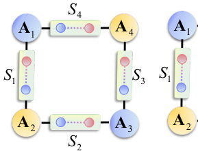
<figcaption class="paper-figure-caption"><b>Fig 4.</b> Figure 4. The yellow circles in the figure represent independent parties.</figcaption>
</figure>
<figure class="paper-figure-card">
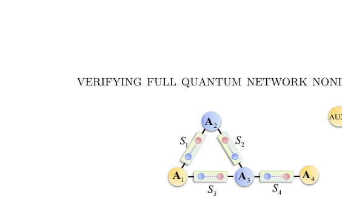
<figcaption class="paper-figure-caption"><b>Fig 5.</b> Figure 6. (a) A network Ξ(4, 4) with the maximum independence num-</figcaption>
</figure>
</div>
<p><strong>Summary.</strong> This paper introduces a novel method to verify Full Quantum Network Nonlocality (FQNN) across any network topology using just one nonlinear Bell-like inequality. The technique involves augmenting the original network with auxiliary local sources and testing the resulting structure against a derived inequality. A violation of this single test proves that all original quantum sources exhibit genuine nonlocality.</p>
<p><strong>Why it may be interesting.</strong> This work provides a powerful, general tool for certifying fundamental quantum properties (nonlocality) in complex, realistic network architectures, which is highly relevant to quantum communication protocols.</p>
<details>
<summary>Detailed structure</summary>
<p><strong>Main problem.</strong> The primary goal is to develop a method to verify Full Quantum Network Nonlocality (FQNN) in quantum networks with arbitrary topologies.</p>
<p><strong>Main result.</strong> The authors propose an efficient technique that certifies FQNN using only a single nonlinear Bell-like inequality, overcoming limitations of previous topology-specific tests.</p>
<p><strong>Method.</strong> They enlarge the original network by adding carefully chosen auxiliary local sources and parties. The resulting augmented network is then tested with a single derived $l$-QNL inequality.</p>
<p><strong>Model / system.</strong> The system involves quantum networks distributing entangled states among spatially separated parties ($S_1, S_2, \dots$). Specific examples analyzed include triangular, chain, and cyclic network topologies ($\Xi(n, m)$).</p>
<p><strong>Key observables.</strong> Violation of the derived nonlinear Bell-like inequality (e.g., $|	ext{Inew}|_1/4 + |	ext{Jnew}|_1/4 > 	ext{Bound}$), which implies that all original sources must be nonlocal.</p>
<p><strong>Important parameters / regimes.</strong> The maximum independent number ($h$) and the topological parameters defining the network structure are crucial for constructing the inequality.</p>
<p><strong>Assumptions / limitations.</strong> The method assumes that violating the derived inequality provides a conclusive proof of FQNN, and concrete calculations sometimes assume sources are in Werner states.</p>
<p><strong>Figures summary.</strong> Figures illustrate the concept using triangular networks (showing augmentation), chain networks, and cyclic networks, detailing how auxiliary local sources expand the original structure for testing.</p>
<p><strong>Paper structure.</strong> The paper develops a general inequality based on network topology parameters ($h$) and then applies this method to specific, complex topologies like $\Xi(3, 3)$, chain networks ($\Xi(n, n-1)$), and cyclic networks ($\Xi(n, n)$) through augmentation.</p>
</details>
<details>
<summary>Abstract</summary>
<p>Full quantum network nonlocality (FQNN) describes a scenario where all sources in a network are nonlocal. Existing criteria of FQNN can only be verified in star networks by violating a single Bell-like inequality. Here we propose a method that certifies FQNN in general quantum networks using only a single Bell-like inequality. We show that the topological obstacle to one-shot detection can be overcome by expanding the original network with a carefully chosen number of auxiliary local sources and parties. The correlations of the enlarged network are then tested with a single inequality; a violation implies that all original sources must be nonlocal. Our approach provides an efficient, experimentally friendly way to verify FQNN in any network topology.</p>
</details>
<p><sub><a href="#top">↑ back to top</a></sub></p>
</details>
<h2 id="secondary-cond-mat-archives">Secondary cond-mat archives</h2>
<p><em>Papers from cond-mat.mtrl-sci, mes-hall, other, soft, supr-con. These archives are de-prioritized — they appear at the end regardless of relevance score.</em></p>
<h3 id="relevant-in-secondary-archives-14">Relevant in secondary archives (14)</h3>

<p><a id="paper-2608.10631"></a></p>
<h3 id="geometric-phonon-energy-pumping-in-a-layer-hybridized-moire-exciton-manifold"><a href="http://arxiv.org/abs/2608.10631v1">Geometric Phonon Energy Pumping in a Layer-Hybridized Moiré Exciton Manifold</a></h3>
<p><strong>Authors:</strong> Bitap Raj Thakuria, Himangshu Prabal Goswami<br>
<strong>Type:</strong> theory · <strong>Category:</strong> statistical mechanics · <strong>PDF:</strong> <a href="https://arxiv.org/pdf/2608.10631v1">https://arxiv.org/pdf/2608.10631v1</a><br>
<strong>Analysis basis:</strong> full PDF text, analyzed in chunks
<strong>Topic relevance:</strong> 🔥 <code>Full counting statistics</code> <strong>4/5</strong> · <code>driven-dissipative phase transition</code> <strong>3/5</strong> · <code>methods for driven-dissipative</code> <strong>3/5</strong> · <code>Keldysh / 2PI / non-Gaussian methods</code> <strong>2/5</strong> · <code>analog quantum simulation</code> <strong>2/5</strong> · <code>non-equilibrium universality</code> <strong>2/5</strong> · <code>quantum measurements</code> <strong>2/5</strong> · <code>correlated / nonlocal dissipation</code> <strong>1/5</strong> · <code>scars &amp; prethermalization</code> <strong>1/5</strong></p>
<div class="figure-strip-hint">↔ Scroll figures horizontally</div>
<div class="paper-figures-scroll">
<figure class="paper-figure-card">
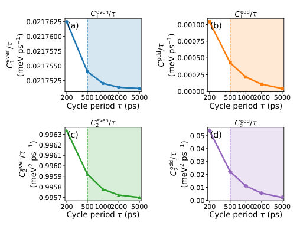
<figcaption class="paper-figure-caption"><b>Fig 1.</b> Figure 2. Calculated cycle-period dependence of the finite-time orientation-even and orientation-odd cumulants per unit time. Pan- els (a) and (c) show Ceven 1 /τ and Ceven 2 /τ, while panels (b) and (d) show Codd 1 /τ and Codd 2 /τ. The nearly constant orientation- even rates verify the time-extensive condition in Eq. (48). The orientation-odd rates decrease approximately as 1/τ because their unnormalized amounts approach constants per completed loop. The shaded region has the same meaning as in Fig. 1 and marks the sampled periods satisfying the combined 1% criterion</figcaption>
</figure>
<figure class="paper-figure-card">
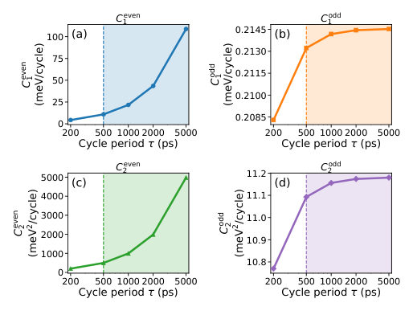
<figcaption class="paper-figure-caption"><b>Fig 2.</b> Figure 1. Calculated cycle-period dependence of the exact finite- time orientation-even and orientation-odd cumulants per completed loop. Panels (a) and (c) show Ceven 1 and Ceven 2 , while panels (b) and (d) show Codd 1 and Codd 2 . The shaded region, beginning at 500 ps, marks the sampled periods for which both the orientation-odd plateau criterion and the orientation-even time-extensive-scaling criterion are satisfied within 1% tolerance for n = 1, 2, and remain satisfied at all longer sampled periods. Within this validated region, Ceven n and Codd n are identified with Cdyn n and Cgeo n , respectively.</figcaption>
</figure>
<figure class="paper-figure-card">
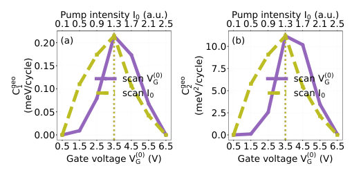
<figcaption class="paper-figure-caption"><b>Fig 3.</b> Figure 3. (Calculated.) One-parameter control-centre scan of the geometric cumulants under baseline conditions. The loop centre in the driving equations Eqs. (22)-(23) is displaced while the trajectory is kept inside the validated gate and pump ranges. Panel (a) contains Cgeo 1 , and panel (b) contains Cgeo 2 . The solid curves denote the gate-</figcaption>
</figure>
<figure class="paper-figure-card">
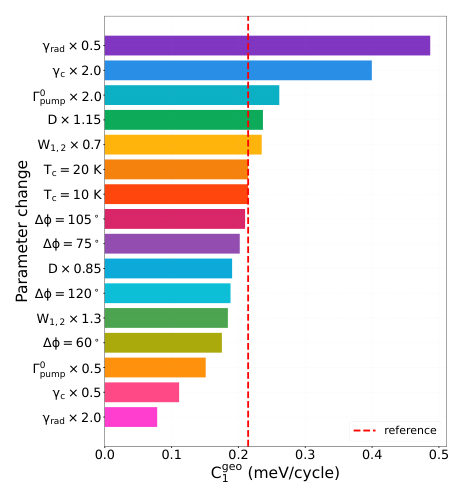
<figcaption class="paper-figure-caption"><b>Fig 4.</b> Figure 4. (Calculated.) One-parameter sensitivity scan of the first geometric cumulant Cgeo 1 . All unvaried parameters retain the baseline values in Table 1. In each bar, only the quantity listed on the vertical axis is changed relative to its baseline value, while all other quantities are kept fixed. The labels γc × 0.5 and γc × 2.0 mean that both γintra c and γinter c are multiplied by 0.5 and 2.0, respectively. Similarly, γrad × 0.5 and γrad × 2.0 mean that both radiative prefactors γintra rad and γinter rad are multiplied by 0.5 and 2.0, respectively. The labels Γ0 pump × 0.5 and Γ0 pump × 2.0 scale the optical-injection prefactor. The labels D × 0.85 and D × 1.15 scale the Stark-slope...</figcaption>
</figure>
<figure class="paper-figure-card">
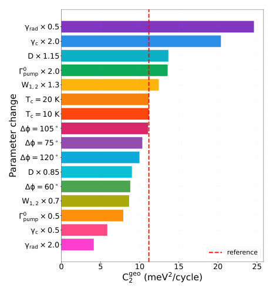
<figcaption class="paper-figure-caption"><b>Fig 5.</b> Figure 5. (Calculated.) One-parameter sensitivity scan of the second geometric cumulant Cgeo 2 . All unvaried parameters retain the baseline values in Table 1. In each bar, only the quantity listed on the vertical axis is changed relative to its baseline value, while all other quantities are kept fixed. The labels γc × 0.5 and γc × 2.0 mean that both γintra c and γinter c are multiplied by 0.5 and 2.0, respectively. Similarly, γrad × 0.5 and γrad × 2.0 mean that both radiative prefactors γintra rad and γinter rad are multiplied by 0.5 and 2.0, respectively. The labels Γ0 pump × 0.5 and Γ0 pump × 2.0 scale the optical-injection prefactor. The labels D × 0.85 and D × 1.15 scale the...</figcaption>
</figure>
</div>

<p><strong>Summary.</strong> The research develops a method to extract a purely geometric component of energy pumping from an exciton manifold by analyzing its energy transfer statistics via Full Counting Statistics. By implementing optimized, non-uniform driving protocols, the authors demonstrate a significant enhancement in signal detectability while proving the robustness of this geometric signature against realistic environmental noise.</p>
<p><strong>Why it may be interesting.</strong> This work provides a concrete, measurable signature—the geometric contribution to energy transfer statistics—in a solid-state platform. The methodology for separating this topological/geometric feature from thermal noise using advanced counting statistics is highly relevant to open quantum system dynamics in condensed matter.</p>
<details>
<summary>Detailed structure</summary>
<p><strong>Main problem.</strong> The work aims to generate and detect a geometric contribution to energy transfer statistics (geometric phonon pumping) from slow cyclic modulation in an open quantum system, separating it from dynamic noise.</p>
<p><strong>Main result.</strong> A Non-Uniform Field Modulation (NUFM) driving protocol significantly enhances the signal-to-noise ratio by suppressing dynamical fluctuations while robustly retaining the geometric pumping signal across realistic environmental variations.</p>
<p><strong>Method.</strong> The analysis employs Full Counting Statistics (FCS) applied to a master equation framework, separating energy cumulants into dynamic and geometric parts based on loop traversal direction reversal.</p>
<p><strong>Model / system.</strong> The system is modeled as a gate-tunable WSe2/WS2 moiré exciton manifold, treated as an open quantum system governed by a Liouvillian approach. The dynamics are analyzed using concepts derived from the tilted master equation and adiabatic approximations.</p>
<p><strong>Key observables.</strong> Geometric first cumulant ($C_{	ext{geo},1}$), dynamic mean ($    ext{Cdyn}_1$), cycle-to-cycle fluctuation ($C_2$), and the fixed-time intrinsic Signal-to-Noise Ratio (SNR).</p>
<p><strong>Important parameters / regimes.</strong> Gate voltage modulation rate, pump intensity modulation rate, environmental relaxation rates (phonon/radiative loss), and the cycle period ($   au$).</p>
<p><strong>Assumptions / limitations.</strong> The analysis relies on the adiabatic approximation for slow driving and models coupling to the environment via phenomenological rate terms rather than fully coherent Hamiltonian terms.</p>
<p><strong>Figures summary.</strong> Figures compare performance metrics (like SNR) between uniform vs. NUFM traversals, show period dependence of signal retention, and illustrate the local mechanism involving relaxation gaps and control parameter rates.</p>
<p><strong>Paper structure.</strong> The paper establishes the theoretical framework using FCS for open systems, develops the geometric separation technique via loop reversal, optimizes the driving protocol by comparing uniform versus non-uniform modulation (NUFM), and finally validates the robustness of the enhanced signal against varying physical parameters.</p>
</details>
<details>
<summary>Abstract</summary>
<p>Slow cyclic modulation of an open quantum system can generate a geometric contribution to its energy transfer statistics, separable from the dynamic background. In this work we construct an experimentally anchored four state open system model for a gate-tunable WSe2/WS2 moiré exciton manifold within a population level full counting statistics framework. We first drive the system uniformly through a closed gate and pump loop and separate the geometric contribution from the dynamic background by reversing the loop direction. We then examine how this response changes with environmental rates, exciton coupling, control conditions, and static spectral broadening. A shorter cycle period followed by nonuniform traversal of the driving loop substantially improves detectability while preserving the geometric response. Combined with enhanced phonon relaxation and reduced radiative loss, this gives about a fourteenfold fixed time signal to noise gain relative to the uniform loop. Our results show that the geometric phonon response remains robust against realistic variations in the system and its environment, and that we can improve its detectability more effectively by suppressing dynamical noise through frequency modulated driving.</p>
</details>
<p><sub><a href="#top">↑ back to top</a></sub></p>

<p><a id="paper-2608.10638"></a></p>
<h3 id="from-zero-to-mega-gauss-fields-comprehensive-magnetophotonic-spectroscopy-of-graphene-dirac-cones"><a href="http://arxiv.org/abs/2608.10638v1">From Zero to Mega-Gauss Fields: Comprehensive Magnetophotonic Spectroscopy of Graphene Dirac Cones</a></h3>
<p><strong>Authors:</strong> Shojiro Takeyama, Hiroaki Saito<br>
<strong>Type:</strong> both · <strong>Category:</strong> other · <strong>PDF:</strong> <a href="https://arxiv.org/pdf/2608.10638v1">https://arxiv.org/pdf/2608.10638v1</a><br>
<strong>Analysis basis:</strong> full PDF text, analyzed in chunks
<strong>Topic relevance:</strong> 🔥 <code>analog quantum simulation</code> <strong>4/5</strong> · <code>Keldysh / 2PI / non-Gaussian methods</code> <strong>3/5</strong> · <code>correlated / nonlocal dissipation</code> <strong>2/5</strong> · <code>quantum measurements</code> <strong>2/5</strong> · <code>driven-dissipative phase transition</code> <strong>1/5</strong> · <code>methods for driven-dissipative</code> <strong>1/5</strong> · <code>non-equilibrium universality</code> <strong>1/5</strong> · <code>quantum optics experiment</code> <strong>1/5</strong></p>
<div class="figure-strip-hint">↔ Scroll figures horizontally</div>
<div class="paper-figures-scroll">
<figure class="paper-figure-card">
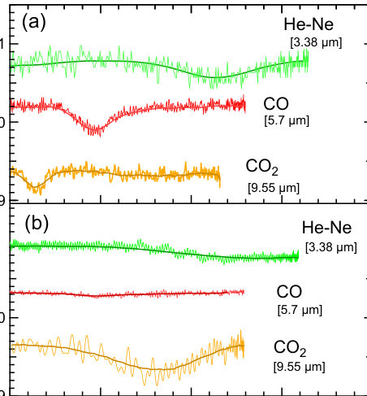
<figcaption class="paper-figure-caption"><b>Fig 1.</b> Figure 1: Magneto-transmission spectra in magnetic fields measured using He-Ne, CO, and CO2 lasers with photon energies of ℏω0 = 0.367 eV, ℏω0 = 0.218 eV, and ℏω0 = 0.130 eV, respectively, for (a) sample A, and (b) sample B. (Note: For Sample A [Fig. 1(a)], the raw experimental data are identical to those presented in Fig. 1 of Ref. [7].)</figcaption>
</figure>
<figure class="paper-figure-card">
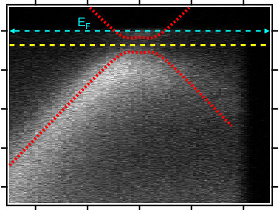
<figcaption class="paper-figure-caption"><b>Fig 2.</b> Figure 2: Two-dimensional ARPES energy-momentum intensity map captured along the ky direction across the K (K′) high-symmetry points. The red solid line denotes the best-fit curve calculated from the model, Eq. (1), which cleanly traces the distorted dispersion Dirac band. The center of the energy gap (the yellow dashed line) is positioned approximately 0.18 eV below the Fermi energy (EF ), indicated by the sky blue dashed line.</figcaption>
</figure>
<figure class="paper-figure-card">
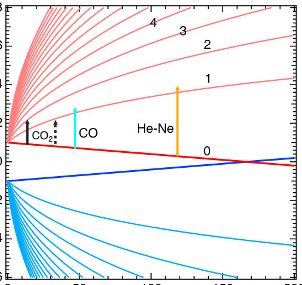
<figcaption class="paper-figure-caption"><b>Fig 3.</b> Figure 3: Calculated Landau-level (LL) fan chart up to 200 T based on the distorted Dirac dispersion model, using parameters extracted from our ARPES analysis (vF = 1.06×106 m/s, ∆= 0.1 eV). The red and blue curves represent the LLs for the conduction and valence bands, respectively. The solid vertical arrows (black, blue, and orange) indicate the optical transition energies corresponding to the STC experiments shown in Fig. 1(a) for the CO2 (ℏω0 = 0.130 eV), CO (ℏω0 = 0.218 eV), and He-Ne (ℏω0 = 0.367 eV) lasers. Notably, the dashed arrow indicates where the CO2 laser transition would be expected to appear if it were a conventional cyclotron resonance (CR). A level crossover between the 0+...</figcaption>
</figure>
<figure class="paper-figure-card">

<figcaption class="paper-figure-caption"><b>Fig 4.</b> Figure 4 displays the high-energy magneto-photo absorption spectra capturing the cyclotron resonance (CR) regimes under ultrahigh magnetic fields ranging from 300 to 600 T. The mea- surements were performed using a thulium fiber laser operating at a wavelength of 1.950 µm, which corresponds to a photon energy of 0.636 eV. For both Sample A and Sample B, broad absorption peaks accompanied by several oscillatory structures are clearly observed over a wide magnetic field range from 100 to 560 T. It should be noted that these raw spectral profiles are identical to those presented in Fig. 3 of Ref. [7]. However, as previously addressed in the discus-</figcaption>
</figure>
<figure class="paper-figure-card">
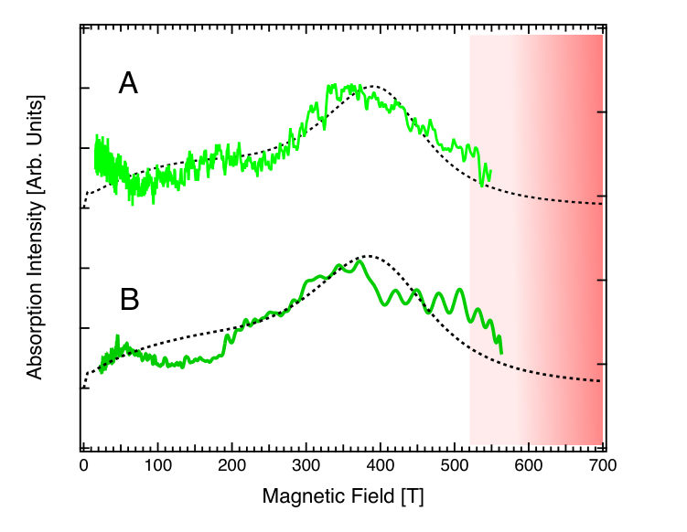
<figcaption class="paper-figure-caption"><b>Fig 5.</b> Figure 4: Magneto-infrared absorption spectra for A: Sample A and B: Sample B in ultrahigh magnetic fields up to 560 T, measured at room temperature using a thulium fiber laser (photon energy: 0.636 eV). The solid curves represent the optical absorption spectra calculated via the collective Alfvén wave model. The red-shaded graduation above 500 T marks the region that is interpreted as being potentially influenced by stray infrared radiation emitted from the approaching liner of the EMFC (Detailed experimental configurations are provided in the Supplementary Material—Sec. S1 [13]).</figcaption>
</figure>
</div>

<p><strong>Summary.</strong> The authors studied graphene's optical response in ultrahigh magnetic fields, finding that the behavior deviates significantly from simple models. They demonstrated that at extreme fields, the system forms a fully compensated electron-hole plasma whose collective excitations are accurately described by an Alfvén wave model. This work establishes graphene as a platform for simulating astrophysical relativistic plasmas.</p>
<p><strong>Why it may be interesting.</strong> This work bridges condensed matter physics (graphene) with high-energy astrophysics concepts (relativistic plasma), using advanced magneto-optics to probe fundamental quantum electrodynamic effects in a solid-state system.</p>
<details>
<summary>Detailed structure</summary>
<p><strong>Main problem.</strong> To investigate the infrared magneto-optical response of n-doped epitaxial graphene under ultrahigh magnetic fields, specifically determining if the system deviates from ideal Dirac cone behavior.</p>
<p><strong>Main result.</strong> The extreme-field absorption spectra are excellently reproduced by a collective Alfvén wave model, demonstrating that the 2D graphene system can realize a tabletop analog to relativistic electron-positron plasmas.</p>
<p><strong>Method.</strong> A combination of experimental magneto-optical spectroscopy (using single-turn coils and flux compression) and theoretical modeling based on generalized bilayer graphene Hamiltonians was employed.</p>
<p><strong>Model / system.</strong> The physical system is n-doped epitaxial graphene on 4H-SiC, modeled using effective Hamiltonians that account for band warping and electron-hole plasma dynamics in extreme magnetic fields. The analysis transitions from single-particle cyclotron resonance to collective Alfvén wave excitations.</p>
<p><strong>Key observables.</strong> Anomalously broad magneto-absorption spectra, 'camel-back' structure in ARPES dispersion, critical level crossing between $N=0^+$ and $N=0^-$ Landau levels.</p>
<p><strong>Important parameters / regimes.</strong> Magnetic field up to 560 T; energy gap $E_g \sim 0.2$ eV; magnetic enhancement of sublattice potential asymmetry (0.10 eV to 0.12 eV).</p>
<p><strong>Assumptions / limitations.</strong> The analysis assumes that the high-field behavior is governed by collective plasma modes rather than single-particle cyclotron resonance, necessitating the use of a bilayer-derived model for LL calculations.</p>
<p><strong>Figures summary.</strong> Figure 1 shows magneto-transmission spectra using various lasers; Figure 2 displays ARPES data showing the 'camel-back' structure; and Figure 3 illustrates calculated Landau Level fan charts predicting level crossing near 160–200 T.</p>
<p><strong>Paper structure.</strong> The paper progresses by first observing anomalous optical responses, then using ARPES to map a distorted Dirac dispersion, theoretically modeling the high-field LL behavior showing a critical crossover, and finally interpreting the extreme-field spectra via the collective Alfvén wave model.</p>
</details>
<details>
<summary>Abstract</summary>
<p>We investigate the infrared magneto-optical response of n-doped epitaxial graphene on 4H-SiC in ultrahigh magnetic fields up to 560~T, utilizing single-turn coil and electromagnetic flux compression techniques. The measured absorption spectra are anomalously broad, strongly deviating from conventional cyclotron resonance. Angle-resolved photoemission spectroscopy (ARPES) reveals a distorted Dirac dispersion featuring a ``camel-back" structure with an energy gap of $E_g \sim 0.2$~eV. Using the band parameters extracted via a generalized bilayer graphene model, we construct a Landau level (LL) fan chart that dictates a critical level crossing between the $N=0^+$ and $N=0^-$ states near 160--200~T. At this threshold, the optical transition mechanism undergoes a dramatic shift from an electron-dominated collective mode to a cooperative electron-hole collective excitation. Furthermore, the extreme-field absorption spectra under thulium fiber laser excitation ($\hbarω_0 = 0.636$~eV)---culminating in a massive resonance near 400~T with a shoulder at 200~T---are excellently reproduced by a collective Alfvén wave model. This analysis also evidences a magnetic-field-induced enhancement of the sublattice potential asymmetry parameter (from 0.10~eV to 0.12~eV). This directly signifies that the macroscopic electron-hole band asymmetry is further amplified by the applied magnetic field. Ultimately, the field-induced energy inversion generates a strongly interacting, fully compensated electron-hole plasma. The resonant excitation of Alfvén waves in this regime demonstrates that a pristine tabletop analog to the relativistic electron-positron plasmas found in astrophysical extremes can be elegantly realized within a 2D graphene system.</p>
</details>
<p><sub><a href="#top">↑ back to top</a></sub></p>

<p><a id="paper-2608.10371"></a></p>
<h3 id="moving-analogue-horizons-in-stationary-ferroelectrics"><a href="http://arxiv.org/abs/2608.10371v1">Moving Analogue Horizons in Stationary Ferroelectrics</a></h3>
<p><strong>Authors:</strong> David Galvez-Poblete, Rubén M. Otxoa, Alvaro S. Nunez, Sebastian Allende<br>
<strong>Type:</strong> theory · <strong>Category:</strong> other · <strong>PDF:</strong> <a href="https://arxiv.org/pdf/2608.10371v1">https://arxiv.org/pdf/2608.10371v1</a><br>
<strong>Analysis basis:</strong> full PDF text, analyzed in chunks
<strong>Topic relevance:</strong> 🔥 <code>analog quantum simulation</code> <strong>4/5</strong> · <code>driven-dissipative phase transition</code> <strong>2/5</strong> · <code>non-equilibrium universality</code> <strong>2/5</strong> · <code>Frenkel-Kontorova</code> <strong>1/5</strong> · <code>Keldysh / 2PI / non-Gaussian methods</code> <strong>1/5</strong> · <code>methods for driven-dissipative</code> <strong>1/5</strong> · <code>superradiant laser</code> <strong>1/5</strong></p>
<div class="figure-strip-hint">↔ Scroll figures horizontally</div>
<div class="paper-figures-scroll">
<figure class="paper-figure-card">
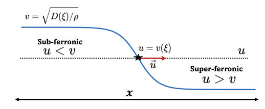
<figcaption class="paper-figure-caption"><b>Fig 1.</b> FIG. 1. Schematic of dynamic modulation of the ferronic velocity v = p</figcaption>
</figure>
<figure class="paper-figure-card">
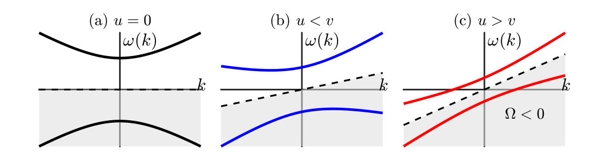
<figcaption class="paper-figure-caption"><b>Fig 2.</b> FIG. 2. Dispersion relation of ferronic excitations. (a) Zero-flow case, showing the gapped ferronic and antiferronic branches. (b) Subferronic regime (u &lt; v), where the Doppler shift modifies the dispersion while preserving positive norm modes. (c) Superferronic regime (u &gt; v), where a portion of the spectrum enters the Ω= ω −uk &lt; 0 region, giving rise to negative-norm modes. The dashed line corresponds to Ω= 0.</figcaption>
</figure>
<figure class="paper-figure-card">
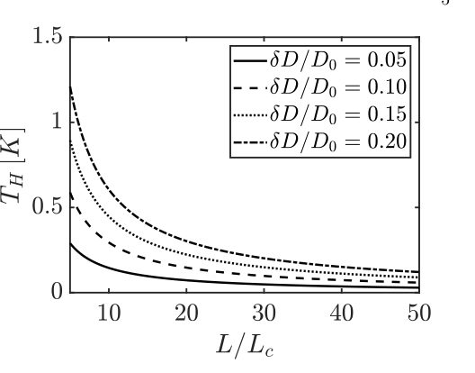
<figcaption class="paper-figure-caption"><b>Fig 3.</b> FIG. 3. Hawking temperature of the ferroelectric LiNbO3 analogue horizon as a function of the dimensionless transition length L/Lc for different modulation amplitudes.</figcaption>
</figure>
</div>

<p><strong>Summary.</strong> This work demonstrates that ferroelectric materials can act as novel platforms for analogue gravity by exhibiting effective flow in their polarization dynamics. The key mechanism involves modulating the material's stiffness, which creates mobile analogue horizons separating different excitation regimes. Superradiant amplification is predicted to be the primary observable signature of this phenomenon.</p>
<p><strong>Why it may be interesting.</strong> The connection between condensed matter physics (ferroelectrics) and analogue gravity provides a tangible, solid-state platform for studying fundamental concepts of spacetime dynamics using controllable material parameters.</p>
<details>
<summary>Detailed structure</summary>
<p><strong>Main problem.</strong> To investigate analogue gravity phenomena, specifically mobile analogue horizons, using ferroelectric materials where the effective flow is induced by modulating material parameters rather than physical medium transport.</p>
<p><strong>Main result.</strong> Ferroelectrics provide a novel and experimentally controllable platform for studying massive scalar excitations in analogue gravity, with superradiant-like amplification being a key observable signature.</p>
<p><strong>Method.</strong> The analysis models small polarization fluctuations (ferrons) using a massive Klein-Gordon equation modified by an induced flow term, comparing it to effective metrics derived from curved spacetime analogues.</p>
<p><strong>Model / system.</strong> The system is a one-dimensional ferroelectric described by the Landau-Ginzburg-Devonshire formalism. Dynamics are governed by a massive Klein-Gordon equation with flow: $(\partial_t - u\partial_\xi)^2 \phi - v^2 \partial_\xi^2 \phi + m^2 \phi = 0$.</p>
<p><strong>Key observables.</strong> Analogue horizons (where $u=v$), superradiant-like amplification, and the effective mass gap ($\omega_{gap}$)</p>
<p><strong>Important parameters / regimes.</strong> Modulation velocity ($u$), ferronic velocity ($v$), external electric field strength (tuning $m^2$)</p>
<p><strong>Assumptions / limitations.</strong> The analysis relies on a local approximation derived from the adiabaticity condition ($\epsilon \ll 1$), requiring modulation wavelengths to be much larger than the characteristic ferronic length scale.</p>
<p><strong>Figures summary.</strong> Figure 1 schematically illustrates the dynamic modulation of the ferronic velocity and marks the location of the analogue horizon.</p>
<p><strong>Paper structure.</strong> The paper establishes the physical model using LGD theory, derives the flowing Klein-Gordon equation, analyzes the resulting effective metric components to identify horizons based on flow vs. material speed ($u$ vs $v$), and discusses observable phenomena like superradiance and tunability via external fields.</p>
</details>
<details>
<summary>Abstract</summary>
<p>We show that a traveling modulation of the polarization-gradient stiffness in a ferroelectric material induces an effective flow in its collective polarization dynamics. Within a controlled local approximation, small polarization fluctuations, or ferrons, obey a massive Klein-Gordon equation with flow. Unlike conventional analogue-gravity platforms, the effective flow originates from the modulation of the material parameters rather than from the physical transport of the medium. This mechanism enables mobile analogue horizons separating sub-ferronic and super-ferronic regions, the latter supporting negative-norm antiferron modes. Their coupling to positive-norm ferrons gives rise to superradiant-like amplification, while the effective mass gap can be tuned independently through an external electric field. Ferroelectric systems therefore provide a novel and experimentally controllable platform for analogue gravity with massive scalar excitations.</p>
</details>
<p><sub><a href="#top">↑ back to top</a></sub></p>

<p><a id="paper-2608.10325"></a></p>
<h3 id="real-time-fpga-based-multi-parameter-feedback-stabilization-of-a-silicon-double-quantum-dot"><a href="http://arxiv.org/abs/2608.10325v1">Real-Time FPGA-Based Multi-Parameter Feedback Stabilization of a Silicon Double Quantum Dot</a></h3>
<p><strong>Authors:</strong> Johnathan Bryan, Tim J. Wilson, Hong-Wen Jiang<br>
<strong>Type:</strong> experiment · <strong>Category:</strong> quantum information and computing · <strong>PDF:</strong> <a href="https://arxiv.org/pdf/2608.10325v1">https://arxiv.org/pdf/2608.10325v1</a><br>
<strong>Analysis basis:</strong> full PDF text, analyzed in chunks
<strong>Topic relevance:</strong> 🔥 <code>QC/QI experiment</code> <strong>4/5</strong> · 🔥 <code>quantum measurements</code> <strong>4/5</strong> · <code>methods for driven-dissipative</code> <strong>1/5</strong></p>
<div class="figure-strip-hint">↔ Scroll figures horizontally</div>
<div class="paper-figures-scroll">
<figure class="paper-figure-card">
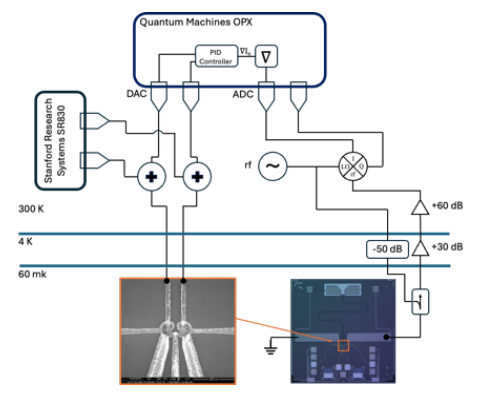
<figcaption class="paper-figure-caption"><b>Fig 1.</b> FIG. 1. Schematic of the experimental setup. The double quantum dot, located at the 60 mK stage, is coupled to an RF-reflectometry circuit for fast dispersive readout. The reflected signal is amplified and demodulated, while a Quantum Machines OPX provides digital signal processing and voltage control</figcaption>
</figure>
<figure class="paper-figure-card">
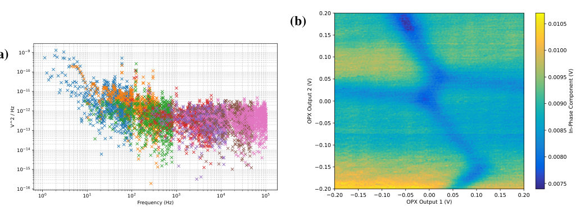
<figcaption class="paper-figure-caption"><b>Fig 2.</b> FIG. 2. (a) Power spectral density of the in-phase signal component showing the 1/ f noise present in our system. Data was taken at the point corresponding to 0 output voltage as shown in (b). This spectrum is generated by overlaying traces from multiple runs, shown by the different point colors. (b) Device charge stability diagram. Feedback was initialized at a minimum in the interdot transition signal, occurring at approximately zero output voltage.</figcaption>
</figure>
<figure class="paper-figure-card">
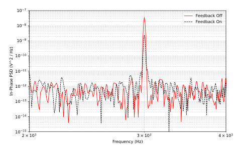
<figcaption class="paper-figure-caption"><b>Fig 3.</b> FIG. 4. Power spectral density of the in-phase component with a 300 Hz sinusoidal perturbation applied to the device. The solid red line represents the spectrum with the feedback loop disabled, while the dashed black line is with feedback enabled.</figcaption>
</figure>
<figure class="paper-figure-card">
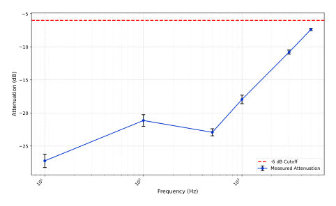
<figcaption class="paper-figure-caption"><b>Fig 4.</b> FIG. 5. Measured attenuation of the in-phase signal power spectral density as a function of the applied perturbation frequency.</figcaption>
</figure>
<figure class="paper-figure-card">
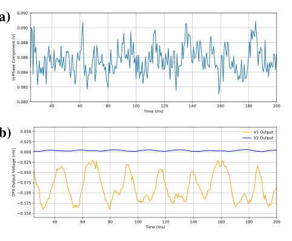
<figcaption class="paper-figure-caption"><b>Fig 5.</b> FIG. 3. Time-domain response of the feedback protocol. (a) shows the in-phase signal over time as recorded by the OPX. The sinusoidal perturbation is clearly shown. (b) shows the output voltages applied by the OPX to the device.</figcaption>
</figure>
</div>

<p><strong>Summary.</strong> The paper reports an advanced experimental technique to stabilize silicon double quantum dots against disruptive low-frequency charge noise using a fast, multi-parameter feedback loop implemented via FPGA and RF-reflectometry. This method significantly increases the effective feedback bandwidth to 5 kHz, which is crucial for maintaining qubit coherence in solid-state quantum computing architectures.</p>
<p><strong>Why it may be interesting.</strong> This work directly addresses a critical engineering bottleneck in solid-state quantum computing: decoherence due to environmental charge noise. The implementation of real-time, high-bandwidth feedback control is highly relevant for building scalable quantum processors.</p>
<details>
<summary>Detailed structure</summary>
<p><strong>Main problem.</strong> The primary challenge addressed is actively stabilizing quantum dot potentials against low-frequency 1/f charge noise to enable long-term operation of semiconductor spin qubits.</p>
<p><strong>Main result.</strong> The high-speed feedback scheme successfully suppressed low-frequency 1/f noise, achieving a -6 dB noise suppression up to a bandwidth of 5 kHz.</p>
<p><strong>Method.</strong> The authors extended the Gradient-Descent Feedback (GDFB) approach by integrating high-bandwidth RF-reflectometry readout with an FPGA controller for continuous multi-parameter gradient calculation and fast gate voltage updates.</p>
<p><strong>Model / system.</strong> The experiment is performed on a Silicon Double Quantum Dot (DQD) fabricated on a heterostructure, which serves as the physical platform for semiconductor spin qubits.</p>
<p><strong>Key observables.</strong> Low-frequency 1/f charge noise, and the in-phase component of the reflected microwave signal used to measure potential shifts.</p>
<p><strong>Important parameters / regimes.</strong> The achieved noise suppression bandwidth is 5 kHz, significantly surpassing previous limits based on DC transport measurements. The feedback cycle time dictates a theoretical maximum cutoff frequency of $\sim 6.1 \text{ kHz}$.</p>
<p><strong>Assumptions / limitations.</strong> The primary limitation noted is that the current feedback bandwidth is constrained by the total feedback cycle time ($\approx 81.8 \mu\text{s}$ per cycle).</p>
<p><strong>Figures summary.</strong> Figures illustrate the experimental setup, show Power Spectral Density (PSD) comparisons demonstrating noise suppression with and without feedback, and plot the measured attenuation of the PSD as a function of perturbation frequency.</p>
<p><strong>Paper structure.</strong> The paper details the necessity of active stabilization for spin qubits, introduces the advanced GDFB protocol using RF-reflectometry on an FPGA platform, presents results showing high-bandwidth noise suppression, and concludes by discussing future work related to coherence time characterization.</p>
</details>
<details>
<summary>Abstract</summary>
<p>Long term operation of semiconductor spin qubits requires active stabilization of quantum dot potentials against low-frequency charge noise. Previous work demonstrated a gradient-descent feedback (GDFB) approach on a silicon double quantum dot utilizing transport current measurements. We extend such a GDFB approach in a silicon double quantum dot device with high-bandwidth rf-reflectometry readout by utilizing a field-programmable gate array, the OPX by Quantum Machines, for digital signal processing. The OPX enables continuous multi-parameter gradient calculation and quick gate voltage updates, significantly increasing the effective feedback bandwidth compared to previous work. By operating with 8 steps per feedback cycle and an integration time of 25.6 $μ$s, this high speed stabilization scheme achieves a -6 dB noise suppression up to a bandwidth of 5 kHz. This effectively suppresses low frequency 1/f noise, maintaining device stability over longer time periods, and potentially enables real-time control in large-scale quantum dot arrays.</p>
</details>
<p><sub><a href="#top">↑ back to top</a></sub></p>

<p><a id="paper-2608.10842"></a></p>
<h3 id="studying-electron-beam-coherence-using-plasmon-interference"><a href="http://arxiv.org/abs/2608.10842v1">Studying electron beam coherence using plasmon interference</a></h3>
<p><strong>Authors:</strong> Evelijn Akerboom, F. Javier García de Abajo, Albert Polman<br>
<strong>Type:</strong> experiment · <strong>Category:</strong> other · <strong>PDF:</strong> <a href="https://arxiv.org/pdf/2608.10842v1">https://arxiv.org/pdf/2608.10842v1</a><br>
<strong>Analysis basis:</strong> full PDF text, analyzed in chunks
<strong>Topic relevance:</strong> 🔥 <code>quantum measurements</code> <strong>4/5</strong> · <code>interference shaping light</code> <strong>3/5</strong> · <code>quantum optics experiment</code> <strong>1/5</strong></p>
<div class="figure-strip-hint">↔ Scroll figures horizontally</div>
<div class="paper-figures-scroll">
<figure class="paper-figure-card">
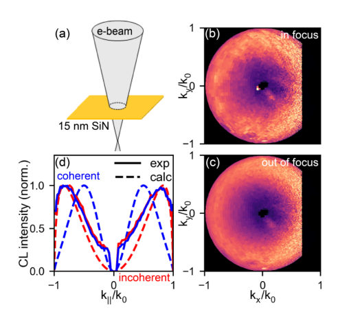
<figcaption class="paper-figure-caption"><b>Fig 1.</b> FIG. 1. Lack of coherence in transition radiation excited by a laterally extended e-beam. We measure TR from a 15-nm Si3N4 thin film excited by 30-keV electrons at a beam cur- rent of 1.6 nA. (a) Schematic representation of the experiment when the sample is placed above the focal point of the e-beam to laterally spread the electron spot at the sample. (b,c) AR CL data measured with a 50-nm bandpass filter centered at a wavelength of 500 nm, for (b) the Si3N4 film in the focal position, and (c) with a spread e-beam of 6-µm diameter. (d) Calculated (dashed) and experimentally measured (solid) data for TR emitted from the Si3N4 film. The calculation shows both the characteristic AR CL emission...</figcaption>
</figure>
<figure class="paper-figure-card">

<figcaption class="paper-figure-caption"><b>Fig 2.</b> FIG. 2. Narrow-beam excitation of two Au pillars with different lengths horizontally displaced by 200 nm. (a) Schematic representation of the measurement (top) and top-view SEM image of the fabricated sample with the colored dots indicating the three measurement configurations (bottom). (b-d) AR spectral CL data from the double pillars and (e-g) Fourier-transformed data in the time domain for three different configurations: (b,e) the e-beam grazes the larger pillar (red dot in (a)), (c,f) the electron grazes the smaller pillar (blue dot in (a)), and (d,g) the e-beam passes in between the two pillars (green dot in (a)). The white dashed lines in (e-g) indicate the expected time delay...</figcaption>
</figure>
<figure class="paper-figure-card">

<figcaption class="paper-figure-caption"><b>Fig 3.</b> FIG. 3. Excitation of a double pillar geometry with a laterally spread e-beam. (a) Schematic representation of the measurement (top) and top-view SEM image of the fabricated sample (bottom). (b-d) AR CL data from the double pillar geometry using a 50-nm bandwidth filter centered around a wavelength of 500 nm. (e) Line scans along the k∥-space images and (f) their Fourier transform, taken from cuts along the solid lines in (b-d) for excitation by an e-beam passing near the smaller pillar (red) and the taller pillar (blue), or placed between the two pillars, with an e-beam diameter of 500 nm (green). Curves in (e,f) are color-coordinated with the dots and circle in the SEM image of panel (a).</figcaption>
</figure>
<figure class="paper-figure-card">

<figcaption class="paper-figure-caption"><b>Fig 4.</b> FIG. 4. Coherent excitation of two Au pillars placed above each other. (a) Schematic representation of the measurement and the SE image of the fabricated sample taken from the top and at a tilt angle of 15◦. (b-d) AR spectral CL data from the double pillars and (e-g) their Fourier transformed data in the time domain for three configurations: (b,e) the e-beam grazes the small pillar, (c,f) the electron impinges on the large pillar, and (d,g) the e-beam grazes the tall pillar and impinges on the smaller one. The white dashed lines in (e-g) indicate the calculated time delay components corresponding to a pillar height of 3.9 µm and 9.0 µm for the small and large pillar, respectively.</figcaption>
</figure>
<figure class="paper-figure-card">

<figcaption class="paper-figure-caption"><b>Fig 5.</b> FIG. 5. Calculated CL interferogram for two nanopillars with a vertical separation of 1.6 µm, at a wavelength of 500 nm.</figcaption>
</figure>
</div>

<p><strong>Summary.</strong> The research uses cathodoluminescence from plasmonic nanostructures to probe electron beam coherence. It experimentally demonstrates that while single electrons passing sequentially through multiple scatterers exhibit clear interference patterns, using a broad electron beam averages over these paths, resulting only in an incoherent sum. The work highlights the critical role of preserving quantum path information for observing coherent quantum effects.</p>
<p><strong>Why it may be interesting.</strong> This work bridges quantum optics/coherence concepts into solid-state excitation physics using electron beams. The necessity of erasing which-path information echoes fundamental principles in quantum measurement theory, making it relevant for understanding coherence limits in nanoscale spectroscopy.</p>
<details>
<summary>Detailed structure</summary>
<p><strong>Main problem.</strong> The study investigates how electron beam coherence affects cathodoluminescence (CL) signals when exciting plasmonic nanostructures, specifically comparing interference effects from single-electron paths versus extended beam excitation.</p>
<p><strong>Main result.</strong> Interference patterns are observed when the electron passes coherently through multiple separated plasmonic scatterers within the evanescent field; however, these interferences are lost when using a widely defocused (extended) electron beam spot.</p>
<p><strong>Method.</strong> Angle-resolved cathodoluminescence (AR CL) measurements were performed on thin films and double plasmonic pillars using scanning electron microscopes, complemented by Fourier transform analysis of spectral data.</p>
<p><strong>Model / system.</strong> The experiments use energetic electrons exciting $  ext{Si}_3   ext{N}_4$ films or gold-coated nanopillars. The theoretical framework contrasts the incoherent sum expected from extended beams with the coherent interference observed when path information is preserved (e.g., passing between pillars).</p>
<p><strong>Key observables.</strong> Angular CL emission profile, $ ext{k}_\parallel$-space images showing interference fringes, and time-of-flight components derived from Fourier transforms.</p>
<p><strong>Important parameters / regimes.</strong> Electron beam spot size ($\sim 4 	ext{ nm}$ vs. $\mu	ext{m}$), plasmonic pillar separation, and the ability to correlate CL emission with post-selected electron states.</p>
<p><strong>Assumptions / limitations.</strong> The nonrecoil approximation is used in theoretical calculations; a key limitation noted is that extended beams inherently erase which-path information necessary for observing interference.</p>
<p><strong>Figures summary.</strong> Figures show AR CL data comparing focused vs. spread beam excitation (incoherent sum); they also display complex interference patterns and Fourier transforms from double plasmonic pillars, identifying components related to pillar heights.</p>
<p><strong>Paper structure.</strong> The paper progresses by first establishing the contrast between incoherent summation over extended beams (using thin films) and coherent interference observed with single-electron paths (using separated scatterers). It then details measurements on double pillars, confirming coherence via TOF analysis, and concludes by proposing correlation measurements to fully retrieve path-dependent interference.</p>
</details>
<details>
<summary>Abstract</summary>
<p>Energetic electrons create distinct cathodoluminescence (CL) angular distributions upon interaction with dielectric and plasmonic nanostructures, providing valuable information on coherences in the excitation pathways. A counterintuitive prediction is that the CL signals arising from the excitation associated with different lateral regions of an extended electron wave are mutually incoherent and do not interfere, while the signals originating from different structures within the electromagnetic field of a narrow electron beam are mutually coherent. We present conclusive experimental evidence of these effects by examining the angular CL emission profile from defocused electron-beam excitation of a thin silicon nitride film, which is shown to follow an incoherent sum of CL excitations within the electron beam spot. In contrast, CL interferences are observed for separated plasmonic scatterers excited within the evanescent field of a single electron. Coherence may be recovered through correlations between emitted light and post-selected electron states, for which we propose a measurement geometry that erases which-path information of the electron trajectory.</p>
</details>
<p><sub><a href="#top">↑ back to top</a></sub></p>

<p><a id="paper-2608.10486"></a></p>
<h3 id="dynamics-of-amorphous-membranes-in-the-two-dimensional-limit"><a href="http://arxiv.org/abs/2608.10486v1">Dynamics of amorphous membranes in the two-dimensional limit</a></h3>
<p><strong>Authors:</strong> Liga Jasulaneca, Alberto Martín-Pérez, Hongji Zhang, Prertahn Munireternam, Natalia A. Mamchik, Chee-Tat Toh, Artem K. Grebenko, Barbaros Özyilmaz, Makars Šiškins, Farbod Alijani<br>
<strong>Type:</strong> experiment · <strong>Category:</strong> other · <strong>PDF:</strong> <a href="https://arxiv.org/pdf/2608.10486v1">https://arxiv.org/pdf/2608.10486v1</a><br>
<strong>Analysis basis:</strong> full PDF text, analyzed in chunks
<strong>Topic relevance:</strong> <code>driven-dissipative phase transition</code> <strong>3/5</strong> · <code>non-equilibrium universality</code> <strong>3/5</strong> · <code>analog quantum simulation</code> <strong>2/5</strong> · <code>correlated / nonlocal dissipation</code> <strong>2/5</strong> · <code>scars &amp; prethermalization</code> <strong>2/5</strong> · <code>Frenkel-Kontorova</code> <strong>1/5</strong> · <code>methods for driven-dissipative</code> <strong>1/5</strong> · <code>quantum measurements</code> <strong>1/5</strong> · <code>quantum optics experiment</code> <strong>1/5</strong></p>
<div class="figure-strip-hint">↔ Scroll figures horizontally</div>
<div class="paper-figures-scroll">
<figure class="paper-figure-card">

<figcaption class="paper-figure-caption"><b>Fig 1.</b> FIG. 1. Optothermal actuation and interferometric readout of vibrating monolayer amorphous carbon (MAC) membranes. (a) Schematic illustration of MAC, highlighting its structural characteristics: five-, six-, seven-, and eight-member rings, varying bond angles and lengths, and locally hexagonal patches. (b) Raman spectrum acquired on suspended monolayer MAC, showing the disorder-activated D band near 1340 cm−1 and the G band near 1588 cm−1, consistent with disordered sp2 carbon. (c) SEM image of MAC suspended over a Si-supported holey SiNx array, showing continuous suspended regions across the circular openings. (d) AFM characterization of transferred MAC. Left: AFM topography and height...</figcaption>
</figure>
<figure class="paper-figure-card">

<figcaption class="paper-figure-caption"><b>Fig 2.</b> FIG. 2. Linear dynamic response of monolayer MAC nan- odrums. (a) Power spectrum showing a Lorentzian-shaped resonance from which a fundamental frequency of 13.9 MHz and Qth = 843 ± 24 were obtained. (b) Driven fundamental mode of the same nanodrum, with f0,driven ≈13.6 MHz and Qdriven = 302 ± 27. (c) Q distribution for MAC nanodrums with radius R = 1.25 µm and 2.50 µm. (d) Pretension dis- tributions for the same radius values. Horizontal and vertical black bars indicate the median values and interquartile ranges of n0 and Q. Data points are slightly scattered in radius value for clarity.</figcaption>
</figure>
<figure class="paper-figure-card">

<figcaption class="paper-figure-caption"><b>Fig 3.</b> FIG. 3. Amplitude-dependent nonlinear dynamics of MAC resonators. Near-resonant driven responses showing hardening (a) and softening (c) Duffing-type nonlinearities with increasing blue laser drive power. (b, d) Nonlinear damping, indicated by the quadratic relationship between the drive and maximum response amplitudes. Dashed and solid lines show linear and quadratic fits, respectively. (e) Transition from hardening (H) to mixed (M) to softening (S) in a representative MAC nanodrum and (f) statistics of nanodrums showing different nonlinear response types.</figcaption>
</figure>
<figure class="paper-figure-card">

<figcaption class="paper-figure-caption"><b>Fig 4.</b> FIG. 4. Signatures of modal interactions in a MAC nan- odrum. (a) Frequency response at increasing drive, showing the development of a dip in the resonance peak amplitude, consistent with the onset of internal resonance. (b) The same response plotted in normalized units, Vout/Vin, highlights the strong reduction in the apparent quality factor Q. (c) Mode spectrum of a similar MAC nanodrum, showing secondary mode near 2f0, suggesting a 2:1 internal resonance.</figcaption>
</figure>
<figure class="paper-figure-card">

<figcaption class="paper-figure-caption"><b>Fig 5.</b> FIG. 5. Mode spectra of monolayer and multilayer MAC nanodrums. Representative spectra of (a) monolayer and (b) multilayer MAC nanodrums show multiple vibrational modes and nonlinear response features. Thin vertical lines are guides to the eye marking the mode-frequency ratios expected for an ideal tension-dominated circular membrane.</figcaption>
</figure>
</div>

<p><strong>Summary.</strong> This work demonstrates that amorphous carbon (MAC) membranes can function as highly sensitive nanoelectromechanical resonators, opening a new platform for studying mechanics governed by structural disorder. By analyzing nonlinear resonance features like Duffing responses and mode coupling, the authors establish MAC's utility for investigating complex dynamics in the 2D amorphous limit.</p>
<p><strong>Why it may be interesting.</strong> While focused on classical mechanics, the study of disorder-governed dynamics, nonlinearity, and mode coupling in low-dimensional systems provides experimental analogs for understanding dissipation and emergent behavior in open quantum systems or disordered many-body models.</p>
<details>
<summary>Detailed structure</summary>
<p><strong>Main problem.</strong> The study aims to extend mechanical resonator research from crystalline 2D materials (like graphene) to the amorphous 2D limit using monolayer amorphous carbon (MAC). This explores how structural disorder affects nanoscale mechanics.</p>
<p><strong>Main result.</strong> MAC membranes are established as a robust nanoelectromechanical platform, exhibiting pronounced nonlinear dynamics including hardening/softening and intermodal coupling at low effective pretension.</p>
<p><strong>Method.</strong> The research combines optothermal actuation with sensitive interferometric readout to characterize the mechanical resonance and nonlinear response of suspended MAC nanodrums.</p>
<p><strong>Model / system.</strong> The physical system is atomically thin, amorphous carbon (MAC) membranes suspended over substrates. The analysis models the dynamics using a tensioned membrane description and incorporates optical transduction via reflection from the air-membrane-vacuum gap stack.</p>
<p><strong>Key observables.</strong> Resonant frequencies ($\sim 13.9$ MHz), Quality factors ($Q$), nonlinear Duffing responses (hardening/softening), and mode spectra showing intermodal coupling.</p>
<p><strong>Important parameters / regimes.</strong> Low effective pretension regime ($10^{-4} - 10^{-3} 	ext{ N m}^{-1}$), which amplifies geometric nonlinearities and stress heterogeneity effects.</p>
<p><strong>Assumptions / limitations.</strong> The analysis relies on a transfer-matrix model for optical reflection and assumes the system can be described by modified Duffing oscillator equations, though deviations suggest more complex coupling.</p>
<p><strong>Figures summary.</strong> Figures illustrate structural characterization (Raman/AFM), linear dynamic response spectra showing $Q$ distribution, and mode spectra demonstrating nonlinear behavior like internal resonance dips.</p>
<p><strong>Paper structure.</strong> The paper progresses from establishing the physical platform (MAC membranes) to characterizing its fundamental linear dynamics, then delving into complex nonlinear regimes by analyzing frequency-response curves and multi-mode spectral signatures.</p>
</details>
<details>
<summary>Abstract</summary>
<p>Atomically thin mechanical resonators have been realized predominantly in crystalline two-dimensional (2D) materials, such as graphene, where long-range crystalline order sets their elastic properties and defines their nonlinear resonant behavior. Extending these concepts to the amorphous 2D limit has remained largely unexplored. Here, we demonstrate that monolayer amorphous carbon (MAC) forms suspended membranes that support optothermal actuation and sensitive interferometric readout across both linear and nonlinear regimes of its resonant motion. We resolve thermomechanical motion, driven resonances, and multimode spectra in MAC nanodrums. The frequencies of fundamental vibration modes correspond to unusually low pretensions, placing monolayer MAC nanodrums in a regime where geometric nonlinearities, stress heterogeneity, and mode coupling emerge at comparatively low drive powers. Consistently, we observe pronounced nonlinear dynamics, including hardening, softening, and mixed Duffing responses, nonlinear damping, parametrically excited modes, and signatures of intermodal coupling. These results establish MAC as a robust nanoelectromechanical platform and open an experimental route to disorder-governed nanomechanics in the 2D amorphous limit.</p>
</details>
<p><sub><a href="#top">↑ back to top</a></sub></p>

<p><a id="paper-2608.10125"></a></p>
<h3 id="degenerate-high-order-hybrid-bound-states-in-the-continuum-beyond-diffraction-limit"><a href="http://arxiv.org/abs/2608.10125v1">Degenerate high-order hybrid bound states in the continuum beyond diffraction limit</a></h3>
<p><strong>Authors:</strong> Ji Tong Wang, Nicolae C. Panoiu<br>
<strong>Type:</strong> theory · <strong>Category:</strong> other · <strong>PDF:</strong> <a href="https://arxiv.org/pdf/2608.10125v1">https://arxiv.org/pdf/2608.10125v1</a><br>
<strong>Analysis basis:</strong> full PDF text, analyzed in chunks
<strong>Topic relevance:</strong> <code>correlated / nonlocal dissipation</code> <strong>3/5</strong> · <code>interference shaping light</code> <strong>3/5</strong> · <code>analog quantum simulation</code> <strong>2/5</strong> · <code>Tavis-Cummings &amp; cavity-many-emitter</code> <strong>1/5</strong> · <code>driven-dissipative phase transition</code> <strong>1/5</strong> · <code>methods for driven-dissipative</code> <strong>1/5</strong></p>
<div class="figure-strip-hint">↔ Scroll figures horizontally</div>
<div class="paper-figures-scroll">
<figure class="paper-figure-card">

<figcaption class="paper-figure-caption"><b>Fig 1.</b> FIG. 1. (a) Schematic of a PhC slab with hexagonal lattice supporting zeroth- and first-diffraction orders and formation mechanisms of at-Γ degenerate h-BICs. CL (CR) denotes left- (right-) handed C points carrying the same topological charge. (b) Band surfaces and corresponding Q-factor distribution of the TM-like, at-Γ degenerate modes belonging to the E2 rep- resentation and corresponding to (˜r, ˜d) = (0.226, 0.4715). The color map represents the Q-factor of the modes.</figcaption>
</figure>
<figure class="paper-figure-card">

<figcaption class="paper-figure-caption"><b>Fig 2.</b> FIG. 2. (a) Band structure for the TM-like modes of a PhC slab with hexagonal lattice with (˜r, ˜d) = (0.226, 0.4715). The bottom (top) band of the modes degenerate at Γ, denoted as Eb 2 (Et 2), is shown as red dashed (blue solid) lines. (b) Electric field profiles in the middle plane of the PhC slab at the Γ point. (c) Band dispersion (top panel) and Q-factor (bottom panel) of at-Γ degenerate modes nearby the degeneracy point. The results obtained from the effective Hamiltonian model are shown as red and blue lines, whereas those from numerical simulations are marked by red circles and blue squares.</figcaption>
</figure>
<figure class="paper-figure-card">

<figcaption class="paper-figure-caption"><b>Fig 3.</b> FIG. 3. (a) Dependence of Q on ˜r and ˜d, determined for the at-Γ degenerate modes. (b) Q vs. ˜r, computed for ˜d = 0.4715, namely along the green dashed line in (a). (c) Left panel: far-field polarization map of the Eb 2 mode for (0,0) diffrac- tion channel, where the pink (brown) dashed line denotes the Γ −M (Γ −K) axis. The green dot denotes a V point with topological charge of −2. Right panel: electric field profiles evaluated at the locations marked by circles in the left panel, with ±1 being the eigenvalues of the indicated mirror sym- metry transformations. (d) The same as in (c), but for the Et 2 mode.</figcaption>
</figure>
<figure class="paper-figure-card">

<figcaption class="paper-figure-caption"><b>Fig 4.</b> FIG. 5. Scaling of Q-factor along the Γ −M direction for (a) Eb 2 mode and (b) Et 2 mode. Scaling of Q-factor along the Γ −K direction for (c) Eb 2 mode and (d) Et 2 mode. The dots and squares represent the numerically calculated values at sampled k∥-points, whereas the curves represent the fitting of these results with the 1/k2 ∥function.</figcaption>
</figure>
<figure class="paper-figure-card">

<figcaption class="paper-figure-caption"><b>Fig 5.</b> FIG. 4. k∥-space trajectories of C and QD points in (1, −1) channel for (a) Eb 2 mode and (b) Et 2 mode when ˜r is varied at fixed ˜d = 0.4715. Red (blue) dots denote C points with −1/2 charge and left (right) handedness, whereas purple dots de- note QD points with charge of −1. Middle and right columns show the maps of far-field polarization vector in (1, −1) chan- nel and total Q-factor, respectively, determined at ˜r = 0.2246, 0.226, and 0.2271 in the range ¯kx, ¯ky ∈[−0.01, 0.01] π/a.</figcaption>
</figure>
</div>

<p><strong>Summary.</strong> This paper theoretically demonstrates how to create highly confined, degenerate bound states in the continuum (h-BICs) within photonic crystal structures beyond their normal diffraction limits. By leveraging $C_{6v}$ symmetry and tuning structural parameters, the authors suppress radiation into multiple diffraction channels simultaneously. This opens pathways for designing novel optical devices with enhanced light-matter interaction governed by topological physics.</p>
<p><strong>Why it may be interesting.</strong> This work is highly relevant to quantum optics and open quantum systems because it deals with engineered photonic band gaps (BICs) that exhibit extreme confinement and topological properties. The concept of controlling leakage rates via symmetry protection is a key tool in designing high-quality optical cavities for quantum applications.</p>
<details>
<summary>Detailed structure</summary>
<p><strong>Main problem.</strong> The research aims to demonstrate the existence of degenerate hybrid bound states in the continuum (h-BICs) possessing high-order topological charges, specifically operating beyond the standard diffraction limit.</p>
<p><strong>Main result.</strong> A novel mechanism is proposed and shown to realize at-Gamma degenerate h-BICs by combining symmetry protection for the zeroth order and parameter tuning to eliminate radiation into first-order channels. The frequency splitting near degeneracy scales quadratically and isotropically.</p>
<p><strong>Method.</strong> The study employs an effective Hamiltonian approach, derived from analyzing band structures in photonic crystals, combined with topological charge calculations via winding numbers.</p>
<p><strong>Model / system.</strong> The physical system is a Photonic Crystal (PhC) slab exhibiting $C_{6v}$ symmetry. The analysis uses an effective Hamiltonian $  ilde{H}_{   ext{eff}}$ whose eigenvalues govern the frequency and leakage rate dispersion ($\omega \pm i\gamma$) around the degeneracy point.</p>
<p><strong>Key observables.</strong> Q-factor ($Q$), topological charges (V points), band structure, and far-field polarization maps.</p>
<p><strong>Important parameters / regimes.</strong> The analysis is performed in the regime beyond the diffraction limit, characterized by geometric parameters $   ilde{r}$ and $  ilde{d}$, and momentum $|\mathbf{k}_\parallel|$.</p>
<p><strong>Assumptions / limitations.</strong> The primary assumption involves using an effective Hamiltonian model to approximate the band structure near the degeneracy point, which shows good agreement for small in-plane wavevectors ($|\mathbf{k}_\parallel| < 0.02$).</p>
<p><strong>Figures summary.</strong> Figures illustrate the schematic of h-BIC formation mechanisms, the degenerate band structure and Q-factor distribution at $\Gamma$, and the dependence of the Q-factor on structural parameters ($ ilde{r},    ilde{d}$).</p>
<p><strong>Paper structure.</strong> The paper first establishes the physical system (PhC slab) and the theoretical framework using an effective Hamiltonian. It then details the mechanism for achieving degeneracy by suppressing radiation in multiple diffraction channels, followed by numerical validation of the scaling laws and topological features.</p>
</details>
<details>
<summary>Abstract</summary>
<p>We demonstrate the existence of at-$Γ$ degenerate hybrid bound-states in the continuum (BICs) with high-order topological charges and quadratic band degeneracy in periodic photonic structures with $C_{6v}$ symmetry above the diffraction limit. The degenerate BICs are realized by combining symmetry protection, which suppresses radiation into zeroth-order diffraction channel, with quadratic band degeneracy and parameter tuning to eliminate radiation into first-order diffraction channels. An effective Hamiltonian is used to investigate the band structure around the degeneracy point, and the topological dynamics in all diffraction channels are characterized. This work reveals a novel mechanism for realizing degenerate BICs above the diffraction limit, opening up opportunities for new physics and applications.</p>
</details>
<p><sub><a href="#top">↑ back to top</a></sub></p>

<p><a id="paper-2608.10428"></a></p>
<h3 id="quadrupolar-phase-transition-in-superconducting-lanthanum-hydride"><a href="http://arxiv.org/abs/2608.10428v1">Quadrupolar phase transition in superconducting lanthanum hydride</a></h3>
<p><strong>Authors:</strong> Abhishek Raghav, Kousuke Nakano, Marco Cherubini, Ryotaro Arita, Michele Casula<br>
<strong>Type:</strong> theory · <strong>Category:</strong> statistical mechanics · <strong>PDF:</strong> <a href="https://arxiv.org/pdf/2608.10428v1">https://arxiv.org/pdf/2608.10428v1</a><br>
<strong>Analysis basis:</strong> full PDF text, analyzed in chunks
<strong>Topic relevance:</strong> <code>methods for driven-dissipative</code> <strong>3/5</strong> · <code>driven-dissipative phase transition</code> <strong>2/5</strong> · <code>non-equilibrium universality</code> <strong>2/5</strong> · <code>Frenkel-Kontorova</code> <strong>1/5</strong> · <code>Keldysh / 2PI / non-Gaussian methods</code> <strong>1/5</strong> · <code>analog quantum simulation</code> <strong>1/5</strong></p>
<div class="figure-strip-hint">↔ Scroll figures horizontally</div>
<div class="paper-figures-scroll">
<figure class="paper-figure-card">

<figcaption class="paper-figure-caption"><b>Fig 1.</b> Fig. 1 Structural transition and phonon softening. a, Fm¯3m and R¯3m structures of LaH10. The top row shows the overall cage structures, and the bottom row depicts the position of H cubes within the La sublattice. The force pattern corresponding to one of the three-fold degenerate soft optical phonons of the Fm¯3m lattice driving this transition is shown in the middle. They exhibit T2g symmetry with characteristic shearing/rotational character. Fm¯3m undergoes a rhombohedral distortion (R¯3m) upon decompression. b, Frequency of the T2g soft optical phonons at Γ, three- fold degenerate, as a function of pressure at various temperatures, computed using displacement- displacement correlator...</figcaption>
</figure>
<figure class="paper-figure-card">

<figcaption class="paper-figure-caption"><b>Fig 2.</b> Fig. 2 CMP moments averaged over H cubes and over the centroid trajectory. a. Dipolar, b. quadrupolar and c. octupolar moments. Dipolar and octupolar moments are identically zero. Quadrupolar moments, however, are non-zero in the low-symmetry region, and zero in the high- symmetry region. Thus, they serve as a natural order parameter for this phase transition.</figcaption>
</figure>
<figure class="paper-figure-card">

<figcaption class="paper-figure-caption"><b>Fig 3.</b> Fig. 3 Pressure evolution of the global order parameter across the phase transition. a, Order parameter as a function of pressure at several temperatures. The transition to the high- symmetry phase is defined to occur at the pressure at which the order parameter starts to collapse (dotted line). b, Variance of the order parameter under the same conditions. Fluctuations peak near the transition.</figcaption>
</figure>
<figure class="paper-figure-card">

<figcaption class="paper-figure-caption"><b>Fig 4.</b> Fig. 4 P −T phase diagram of LaH10. The phase boundary identified using the soft phonon agrees with the one identified using the collapse of the order parameter, showing that the two methods are consistent. Phase transitions as determined in previous reports are also shown for comparison 21,22. Ly et al. 22 identified the low-pressure distortion as R¯3m and placed the transition at ≈96 GPa, which is close to the current work. It should be noted that in both these works, calculations were done over a much coarser P-T grid, making it difficult to determine a precise phase boundary.</figcaption>
</figure>
<figure class="paper-figure-card">

<figcaption class="paper-figure-caption"><b>Fig 5.</b> Fig. 5 Equation of state across phase transition obtained from PIMD-NPT simulations at 45 K using a 4×4×4 supercell. a, Total energy per LaH10 unit as a function of pressure. Black dashed lines depict the extrapolation of the high-symmetry phase into the low-pressure regime and of the low-symmetry phase into the high-pressure regime. b, Unit-cell volume (relative to the value at 66 GPa) as a function of pressure. Both E(P) and V (P) exhibit two successive slope changes (red dotted line marks the onset), bounding a finite transition region consistent with a weak first-order transition.</figcaption>
</figure>
</div>

<p><strong>Summary.</strong> This work investigates the structural transition in superconducting lanthanum hydride ($   ext{LaH}<em 2g>{10}$) by showing it is governed by a quadrupolar $    ext{T}</em>$ order parameter. Using advanced simulations, the authors demonstrate that this transition is weakly first-order and correlates the structural instability with the high critical temperature superconductivity. The findings provide theoretical guidance for designing new high-$T_c$ superconductors.</p>
<p><strong>Why it may be interesting.</strong> While focused on solid-state physics, the use of advanced simulation techniques like $   ext{PIMD}$ for anharmonic effects and mapping phase boundaries using order parameters is relevant to understanding quantum many-body dynamics in strongly coupled systems.</p>
<details>
<summary>Detailed structure</summary>
<p><strong>Main problem.</strong> The study aims to characterize the nature of the structural phase transition and its connection to high superconductivity in lanthanum hydride ($ ext{LaH}_{10}$).</p>
<p><strong>Main result.</strong> The structural transition is driven by a quadrupolar $ ext{T}_{2g}$ order parameter and exhibits a weak first-order character, which is linked to the discontinuous softening of optical phonons.</p>
<p><strong>Method.</strong> The research employs cluster multipole moment analysis (CMP) and Path Integral Molecular Dynamics ($    ext{PIMD}$) simulations coupled with advanced neural network potentials trained on DFT data.</p>
<p><strong>Model / system.</strong> The system studied is lanthanum hydride ($  ext{LaH}_{10}$), a superhydride known for its high critical temperature ($T_c = 250   ext{ K}$). The analysis focuses on the structural changes in the hydrogen sublattice under pressure.</p>
<p><strong>Key observables.</strong> Quadrupolar order parameter, soft optical phonon frequencies ($    ext{T}_{2g}$ modes), total energy and volume discontinuities across the phase boundary.</p>
<p><strong>Important parameters / regimes.</strong> High pressures (up to $\sim 170 	ext{ GPa}$) and temperatures; the transition is characterized as weakly first-order.</p>
<p><strong>Assumptions / limitations.</strong> The analysis relies on mapping structural instabilities via multipole moments and phonon softening, assuming these are key ingredients for high-$T_c$ superconductivity.</p>
<p><strong>Figures summary.</strong> Figures illustrate the $   ext{Fm}ar{3}m  o   ext{R}ar{3}m$ structural change, showing soft optical phonons that soften, hit a floor, and jump discontinuously with pressure. Other figures map order parameters and phase boundaries.</p>
<p><strong>Paper structure.</strong> The paper systematically analyzes the symmetry breaking using CMP moments to identify the quadrupolar order parameter, corroborates this finding by observing phonon softening/jumps via PIMD simulations, and confirms the weak first-order nature through thermodynamic calculations.</p>
</details>
<details>
<summary>Abstract</summary>
<p>Lanthanum hydride (LaH$_{10}$) has been widely studied for its high superconducting critical temperature of 250 K at about 170 GPa pressure. Although the structural ${R\bar{3}m}$-to-${Fm\bar{3}m}$ transition under pressure connected to the emergence of the superconducting phase in this material is broadly understood, the detailed characterization of its nature and its order parameter are still missing. By applying the cluster multipole moment analysis to the hydrogen sublattice, we reveal that this transition is triggered by a quadrupolar $T_{2g}$ order parameter, and we provide evidence for its weak first-order nature. By performing path integral molecular dynamics coupled to a message-passing atomic cluster expansion (MACE) neural network potential, trained on Perdew-Burke-Ernzerhof (PBE) density functional theory configurations, we show that the collapse of the order parameter at the transition is simultaneously associated with the discontinuous softening of the optical $T_{2g}$ phonons. Their symmetry lets them carry a non-negligible electron-phonon coupling in LaH$_{10}$, while the weak first-order nature of the transition makes them soft. The presence of structural instabilities with low-frequency quadrupolar distortions can be a key ingredient to enhance superconductivity in superhydrides and provides guidance for the discovery of new high-$T_c$ superconductors in hydrogen-rich compounds.</p>
</details>
<p><sub><a href="#top">↑ back to top</a></sub></p>

<p><a id="paper-2608.10310"></a></p>
<h3 id="nanoscale-imaging-of-ferromagnetic-vortex-dynamics-with-scanning-nv-magnetometry"><a href="http://arxiv.org/abs/2608.10310v1">Nanoscale imaging of ferromagnetic vortex dynamics with scanning NV magnetometry</a></h3>
<p><strong>Authors:</strong> Jeffrey Rable, Jyotirmay Dwivedi, Nitin Samarth, Paul Stevenson, Arun Bansil, Swastik Kar<br>
<strong>Type:</strong> experiment · <strong>Category:</strong> other · <strong>PDF:</strong> <a href="https://arxiv.org/pdf/2608.10310v1">https://arxiv.org/pdf/2608.10310v1</a><br>
<strong>Analysis basis:</strong> full PDF text, analyzed in chunks
<strong>Topic relevance:</strong> <code>quantum measurements</code> <strong>3/5</strong> · <code>QC/QI experiment</code> <strong>2/5</strong> · <code>analog quantum simulation</code> <strong>1/5</strong> · <code>driven-dissipative phase transition</code> <strong>1/5</strong></p>
<div class="figure-strip-hint">↔ Scroll figures horizontally</div>
<div class="paper-figures-scroll">
<figure class="paper-figure-card">

<figcaption class="paper-figure-caption"><b>Fig 1.</b> Figure 1: Schematic of the experimental setup and primary results on a 1 µm square. Scale</figcaption>
</figure>
<figure class="paper-figure-card">

<figcaption class="paper-figure-caption"><b>Fig 2.</b> Figure 2: Rabi oscillation measurement results. Scale bars are 500 nm. (A) Topography of the</figcaption>
</figure>
<figure class="paper-figure-card">

<figcaption class="paper-figure-caption"><b>Fig 3.</b> Figure 3: Measurements on vortex-containing, disordered disc (A) Total magnetic field mea-</figcaption>
</figure>
<figure class="paper-figure-card">

<figcaption class="paper-figure-caption"><b>Fig 4.</b> Figure 4: Rabi oscillation measurement results on a disordered, 6𝜇𝑚disc at 300 nm lift.</figcaption>
</figure>
<figure class="paper-figure-card">

<figcaption class="paper-figure-caption"><b>Fig 5.</b> Figure 5: Evanescent decay of the MW fields produced by the disc. Scale bars are 1 µm. (A)</figcaption>
</figure>
</div>

<p><strong>Summary.</strong> This work reports on using Scanning NV Magnetometry (SNVM) to image both static and microwave stray fields generated by magnetic vortices in permalloy films. The technique achieves high spatial resolution ($\sim 50 	ext{ nm}$) and successfully characterizes dynamic phenomena, such as field enhancements near the vortex core, validating its potential for developing nanoscale magnonic devices.</p>
<p><strong>Why it may be interesting.</strong> While primarily condensed matter magnetism, the use of NV centers to probe nanoscale magnetic dynamics is highly relevant to quantum sensing and open quantum systems characterization, providing a platform for studying spin-field interactions at unprecedented spatial resolution.</p>
<details>
<summary>Detailed structure</summary>
<p><strong>Main problem.</strong> The primary goal is to image and characterize ferromagnetic vortex dynamics, including both static stray fields and microwave (MW) fields, at the nanoscale.</p>
<p><strong>Main result.</strong> The authors successfully demonstrated high-resolution imaging of these dynamic magnetic fields in permalloy structures using SNVM, achieving field enhancements up to $40	imes$ near the vortex core.</p>
<p><strong>Method.</strong> Scanning Nitrogen-Vacancy Magnetometry (SNVM) is employed, utilizing Optically Detected Magnetic Resonance (ODMR) and Rabi oscillation measurements to map both DC and AC magnetic fields.</p>
<p><strong>Model / system.</strong> The experiments are performed on mesoscopic permalloy ($    ext{NiFe}$) thin films patterned into square or disc geometries. The analysis is heavily supported by comparison with micromagnetic simulations solving the LLG equation.</p>
<p><strong>Key observables.</strong> Static stray fields (measured via ODMR frequency), microwave field amplitude (derived from ODMR FWHM and Rabi oscillations), and evanescent decay constants ($k$).</p>
<p><strong>Important parameters / regimes.</strong> Spatial resolution ($\sim 50 	ext{ nm}$), MW field enhancement factors ($\sim 40	imes$), and characteristic decay lengths for different vortex modes.</p>
<p><strong>Assumptions / limitations.</strong> The technique assumes the power-broadened regime relationship between FWHM and $B_{	ext{MW}}$ holds, and that micromagnetic simulations accurately capture the underlying physics despite disorder effects.</p>
<p><strong>Figures summary.</strong> Figures illustrate ODMR/Rabi maps comparing experimental measurements to simulation predictions for both square (wall mode) and disc (azimuthal mode) vortex structures, alongside analyses of field decay with distance.</p>
<p><strong>Paper structure.</strong> The paper progresses by detailing the SNVM measurement techniques (static vs. dynamic fields), presenting results on patterned permalloy samples (square/disc), comparing these findings against detailed micromagnetic simulations, and analyzing specific physical phenomena like field enhancement and wave decay.</p>
</details>
<details>
<summary>Abstract</summary>
<p>The generation and manipulation of spin waves at the nanoscale via magnetic vortices are of considerable importance because of their broad applications across magnonic and quantum technologies. Previously, fixed nitrogen-vacancy (NV) centers in diamond have been used to locally characterize vortex dynamics, and scanning NV magnetometry (SNVM) has been used to image vortices' static stray fields. Here, we demonstrate SNVM imaging of both the static and microwave fields generated by vortices in mesoscopic permalloy structures with $\sim$50 nm spatial resolution, achieving excellent agreement with micromagnetic simulations, while revealing the effects of disorder. We further demonstrate a 40$\times$ microwave field enhancement near a vortex core and image the disorder-dependent, spatially varying, evanescent decay of these microwaves. Our ambient, tabletop technique surpasses diffraction-limited techniques' resolutions by at least 5$\times$, with far greater accessibility and throughput than synchrotron radiation-based techniques, offering new opportunities in the study and development of magnonic devices.</p>
</details>
<p><sub><a href="#top">↑ back to top</a></sub></p>

<p><a id="paper-2608.10721"></a></p>
<h3 id="revealing-time-characteristics-of-optical-excitations-in-dielectric-and-plasmonic-structures-through-cathodoluminescence-interferometry"><a href="http://arxiv.org/abs/2608.10721v1">Revealing time characteristics of optical excitations in dielectric and plasmonic structures through cathodoluminescence interferometry</a></h3>
<p><strong>Authors:</strong> Evelijn Akerboom, Hirohsi Sugimoto, Minoru Fujii, Nicolas Pazos-Perez, Ramon A. Álvarez Puebla, A. Femius Koenderink, F. Javier García de Abajo, Albert Polman<br>
<strong>Type:</strong> experiment · <strong>Category:</strong> other · <strong>PDF:</strong> <a href="https://arxiv.org/pdf/2608.10721v1">https://arxiv.org/pdf/2608.10721v1</a><br>
<strong>Analysis basis:</strong> full PDF text, analyzed in chunks
<strong>Topic relevance:</strong> <code>interference shaping light</code> <strong>3/5</strong> · <code>driven-dissipative phase transition</code> <strong>1/5</strong> · <code>methods for driven-dissipative</code> <strong>1/5</strong> · <code>quantum optics experiment</code> <strong>1/5</strong></p>
<div class="figure-strip-hint">↔ Scroll figures horizontally</div>
<div class="paper-figures-scroll">
<figure class="paper-figure-card">

<figcaption class="paper-figure-caption"><b>Fig 1.</b> Figure 1. Analytical calculation of CL interferometry of a radiating resonant nanoparticle placed at a distance h = 5 μm above a reflecting surface. (a) Angle- and wavelength- resolved CL interferogram of a Lorentzian scatterer with a resonance wavelength of 500 nm and a linewidth of 0.2 rad/fs, and (b) its Fourier transform to the time domain. The dashed curve in (b) shows the calculated time delay associated with the interference pattern for each emission angle. (c) Optical response function of three distinct resonances: a broadband emitter (blue constant line at 1.0), the Lorentzian scatterer from (a,b) (green), and a scatterer with two scattering resonances, one at λ=500 nm with γ=0.2...</figcaption>
</figure>
<figure class="paper-figure-card">

<figcaption class="paper-figure-caption"><b>Fig 2.</b> Figure 2. Analytical calculation of CL interferometry of a resonantly scattering particle placed above a reflecting surface, including TR emission from the substrate. Angle- and wavelength- resolved CL interferogram for (a) a broadband optical emitter, and (b) a Lorentzian scatterer with a resonance wavelength of 500 nm and a linewidth of 0.2 rad/fs. (c) Residuals of (a) and (b). (d) Fourier transform of (b) to the time domain, where the dashed curves show the calculated time delays for each angle, and (e) line scans of the Fourier-transform of the calculated CL interferograms at an emission angle of 40° for the three spectral response functions in Fig. 1(c).</figcaption>
</figure>
<figure class="paper-figure-card">

<figcaption class="paper-figure-caption"><b>Fig 3.</b> Figure 3. Measured CL interferograms for a Au particle of 100 nm in diameter, placed above a Au surface. (a) Angle- and wavelength-resolved CL interferogram for on-particle excitation, (b) its Fourier transform to the time domain, and (c) line scans along emission angles of 50° (orange) and 60° (purple). (d-f) Same as (a-c), but off-particle excitation (see inset in (f)). The line scans in (c,f) are fitted to an exponential rise and fall time (dotted line), and the fitting parameters are shown in Table 1.</figcaption>
</figure>
<figure class="paper-figure-card">

<figcaption class="paper-figure-caption"><b>Fig 4.</b> Figure 4. Temporal distributions derived from CL interferograms for (a) a plasmonic tip, (b) a Au nanostar, and (c) a Si nanosphere. SEM images of the particles are shown in the insets. We plot experimental data (solid curves) along with fitted Lorentzian spectra (dashed curves) at two CL emission angles of, 40◦ (orange) and 80◦ (purple).</figcaption>
</figure>
</div>

<p><strong>Summary.</strong> The authors demonstrate that cathodoluminescence (CL) interferometry can be used as a novel tool to measure the time characteristics and phase of optical resonances in plasmonic and dielectric nanoparticles. By analyzing the Fourier transform of angular and frequency-resolved CL signals, they extract femtosecond decay times without needing complex ultrafast pump-probe setups. This establishes CL interferometry as a versatile method for nanoscale characterization.</p>
<p><strong>Why it may be interesting.</strong> This work provides a powerful, non-pump-probe technique to measure ultrafast dynamics in nanoscale optical cavities, which is highly relevant for understanding energy relaxation in quantum light sources or solid-state emitters.</p>
<details>
<summary>Detailed structure</summary>
<p><strong>Main problem.</strong> Direct time-resolved measurement of optical resonances in nanophotonic systems is challenging due to ultrafast relaxation processes.</p>
<p><strong>Main result.</strong> CL interferometry successfully accesses the temporal response and phase behavior of optical resonances on femtosecond timescales for various plasmonic and dielectric structures.</p>
<p><strong>Method.</strong> The technique uses Fourier transformation of angle- and frequency-resolved cathodoluminescence (CL) interferograms to extract time delay information related to resonance decay times.</p>
<p><strong>Model / system.</strong> The study investigates optical excitations in dielectric and plasmonic nanostructures, including Au nanoparticles, Au nanostars, and Si nanospheres. The measurement setup involves electron beam excitation and collection of CL signals.</p>
<p><strong>Key observables.</strong> Resonance decay times ($   au$), spectral beating signatures, phase information, and the electric far-field amplitude $\mathbf{E}(\mathbf{k}_{\|}, \omega)$.</p>
<p><strong>Important parameters / regimes.</strong> Decay times in the range of 1–10 fs; electron beam energy (30 keV); angular/spectral resolution.</p>
<p><strong>Assumptions / limitations.</strong> The analysis relies on an analytical framework connecting linear temporal and spectral response via Fourier transformation, and sometimes assumes Lorentzian scatterer profiles.</p>
<p><strong>Figures summary.</strong> Figures illustrate the analytical calculation of CL interferometry for different scatterers and show time-domain Fourier transforms revealing interference patterns related to resonance decay times. Other figures compare spectra from various sample geometries (on-particle vs. off-particle).</p>
<p><strong>Paper structure.</strong> The paper develops an analytical framework using CL interferometry, demonstrates its application by analyzing broadband plasmonic and dielectric emitters, and confirms the results experimentally on multiple nanoparticle systems.</p>
</details>
<details>
<summary>Abstract</summary>
<p>Cathodoluminescence (CL) spectroscopy provides access to optical excitations with nanometer spatial resolution, but direct time-resolved measurements of optical resonances remain challenging. Here, we demonstrate that CL interferometry provides access to the temporal response, phase behavior, and modal spectral structure of resonant nanoscale scatterers without requiring ultrafast pump-probe schemes. We develop an analytical framework in which Fourier transformation angle- and frequency-resolved CL interferograms yields the decay time of optical resonances governed by the linear optical response. Multimode resonators exhibit characteristic temporal CL beating signatures associated with spectral mode splitting. By exploiting transition radiation emitted from a nearby metallic surface as a broadband reference, we further demonstrate phase retrieval and cross-correlation measurements between instantaneous and resonant emission processes. Experimental measurements on Au nanoparticles, broadband plasmonic emitters, Au nanostars, and Si nanospheres supporting multipolar Mie resonances confirm the theoretical predictions, and decay times in the range 1-10 fs are derived for each system. Our results establish CL interferometry as a powerful approach for accessing spectral, spatial, and phase information within a single nanoscale measurement with fs resolution.</p>
</details>
<p><sub><a href="#top">↑ back to top</a></sub></p>

<p><a id="paper-2608.10822"></a></p>
<h3 id="strong-coupling-between-antiferromagnetic-magnons-and-spoof-surface-plasmons"><a href="http://arxiv.org/abs/2608.10822v1">Strong coupling between antiferromagnetic magnons and spoof surface plasmons</a></h3>
<p><strong>Authors:</strong> Yamin Sun, Ka Shen, H. Y. Yuan<br>
<strong>Type:</strong> theory · <strong>Category:</strong> other · <strong>PDF:</strong> <a href="https://arxiv.org/pdf/2608.10822v1">https://arxiv.org/pdf/2608.10822v1</a><br>
<strong>Analysis basis:</strong> full PDF text, analyzed in chunks
<strong>Topic relevance:</strong> <code>analog quantum simulation</code> <strong>2/5</strong> · <code>driven-dissipative phase transition</code> <strong>2/5</strong> · <code>Keldysh / 2PI / non-Gaussian methods</code> <strong>1/5</strong> · <code>Tavis-Cummings &amp; cavity-many-emitter</code> <strong>1/5</strong> · <code>correlated / nonlocal dissipation</code> <strong>1/5</strong> · <code>methods for driven-dissipative</code> <strong>1/5</strong></p>
<div class="figure-strip-hint">↔ Scroll figures horizontally</div>
<div class="paper-figures-scroll">
<figure class="paper-figure-card">

<figcaption class="paper-figure-caption"><b>Fig 1.</b> FIG. 1. Schematic of the planar hybrid structure composed of an AFM thin film, dielectric spacer and one dimensional- periodic grooved metal. The classical ground state of the AFM layer is a N´eel state with spins aligned antiparallel to each other along the ±x directions.</figcaption>
</figure>
<figure class="paper-figure-card">

<figcaption class="paper-figure-caption"><b>Fig 2.</b> FIG. 2. (a) Dispersions of bare spoof surface plasmons for different geometric parameters. (b-d) Dispersions of the hy- brid magnon-plasmon excitations in the heterostructures of AFM, dielectric spacer and grooved metals. The geometric parameters are a/p = 1/4, h = 1 µm, and the groove depth d is chosen to satisfy Ω/ωd = 0.15, tuning the spoof surface plasmon into resonance with the AFM magnons. (b) FeF2, d = 28.2 µm; (c) MnF2, d = 172.1 µm; (d) NiO, d = 40.9 µm. The magnetic parameters are shown in Table I.</figcaption>
</figure>
<figure class="paper-figure-card">

<figcaption class="paper-figure-caption"><b>Fig 3.</b> FIG. 3. (a) Coupling strength as a function of the groove width-to-period ratio a/p and groove depth d. (b) Cou- pling strength and penetration depth of spoof surface plas- mon versus a/p along the horizontal dashed line in (a) with d = 28.2 µm, h = 1 µm. (c) Coupling strength and penetra- tion depth of spoof surface plasmon versus d along the vertical dashed line in (a) with a/p = 1/4, h = 1 µm. (d) Coupling strength as a function of h with d = 28.2 µm and a/p = 1/4.</figcaption>
</figure>
<figure class="paper-figure-card">

<figcaption class="paper-figure-caption"><b>Fig 4.</b> Figure 3(d) shows the coupling strength decreases monotonically with increasing the dielectric thickness h. Since both surface plasmons and the AFM magnons are localized near the interface, their coupling is mediated by the overlap of their evanescent fields inside the di- electric spacer. Increasing the dielectric thickness re- duces this mode overlap and therefore weakens the co- herent coupling. For the AFM material studies here, the magnon-plasmon coupling strength can exceed 100 GHz by adjusting the geometric parameters, which in- dicates a substantially efficient energy exchange between the two modes. In the following section, we further ex- amine whether this coupling falls into the...</figcaption>
</figure>
</div>

<p><strong>Summary.</strong> This theoretical study predicts strong coherent coupling between antiferromagnetic magnons and spoof surface plasmons within a novel planar heterostructure. By solving coupled Maxwell and magnetization dynamics equations, the authors confirm the existence of hybrid modes exhibiting avoided crossings in the THz regime. This work presents a highly tunable platform for on-chip quantum information transfer between spin and electromagnetic excitations.</p>
<p><strong>Why it may be interesting.</strong> This work establishes a planar, chip-compatible platform for hybrid magnon-plasmon interactions, which is highly relevant for developing integrated quantum devices that couple spin excitations (magnons) with electromagnetic modes (plasmons).</p>
<details>
<summary>Detailed structure</summary>
<p><strong>Main problem.</strong> The study investigates achieving strong, coherent information exchange between antiferromagnetic (AFM) magnons and spoof surface plasmons in a planar geometry.</p>
<p><strong>Main result.</strong> The authors predict strong magnon-plasmon coupling in the terahertz regime for this planar heterostructure, confirming operation in the strong coupling regime via calculated cooperativity values exceeding unity.</p>
<p><strong>Method.</strong> The analysis involves analytically solving coupled Maxwell and Landau-Lifshitz-Gilbert equations to derive the system's dispersion relation.</p>
<p><strong>Model / system.</strong> The physical platform is a planar heterostructure comprising an AFM thin film, a dielectric spacer, and a structured metal surface supporting spoof surface plasmons (SSPs).</p>
<p><strong>Key observables.</strong> Pronounced avoided crossings in the dispersion relation, coupling strength ($g$), and cooperativity parameter ($C$).</p>
<p><strong>Important parameters / regimes.</strong> The system is tunable via geometric parameters such as groove width-to-period ratio ($a/p$), dielectric thickness ($h$), and groove depth ($d$).</p>
<p><strong>Assumptions / limitations.</strong> Approximations include assuming small-amplitude AFM oscillations and using an effective-medium approach for the corrugated metal.</p>
<p><strong>Figures summary.</strong> Figures illustrate the schematic of the planar structure, bare plasmon dispersions, and the resulting hybrid excitation dispersion curves showing avoided crossings.</p>
<p><strong>Paper structure.</strong> The paper proceeds by setting up the coupled electromagnetic and magnetization dynamics equations, deriving the determinant equation for the dispersion relation, and finally analyzing the coupling strength and cooperativity parameter to confirm strong coupling.</p>
</details>
<details>
<summary>Abstract</summary>
<p>Hybrid magnonic system provides a versatile platform for coherent information exchange between spin excitations and other physical degrees of freedom. While strong coupling between magnons and spoof plasmons has been observed based on ferrimagnetic spheres and localized microwave resonators, it remains unexplored whether coherent magnon-plasmon coupling can be achieved in planar magnetic structures. Here we study the hybridization of antiferromagnetic (AFM) magnons and spoof surface plasmons in a planar heterostructure consisting of an AFM thin film, a dielectric spacer, and a structured metal surface. By analytically solving the coupled Maxwell and magnetization dynamics equation, we predict strong magnon-plasmon coupling in the terahertz regime, manifested by pronounced avoided crossings in the dispersion. The coupling originates from the spatial overlap between magnonic and plasmonic modes in the dielectric spacer, and can be efficiently tuned through geometric parameters of the system. The calculated cooperativity confirms that the hybrid system can operate in the strong coupling regime, enabling coherent information transfer between magnons and plasmons. Our results establish a planar platform for plasmon-magnon hybridization, which is more amenable to on-chip manipulation and integration.</p>
</details>
<p><sub><a href="#top">↑ back to top</a></sub></p>

<p><a id="paper-2608.11192"></a></p>
<h3 id="floquet-engineering-of-topological-phases-and-magneto-optical-response-in-a-driven-math1007math-wave-altermagnet"><a href="http://arxiv.org/abs/2608.11192v1">Floquet Engineering of Topological Phases and Magneto-Optical Response in a Driven $d$-wave Altermagnet</a></h3>
<p><strong>Authors:</strong> Muzamil Shah<br>
<strong>Type:</strong> theory · <strong>Category:</strong> other · <strong>PDF:</strong> <a href="https://arxiv.org/pdf/2608.11192v1">https://arxiv.org/pdf/2608.11192v1</a><br>
<strong>Analysis basis:</strong> full PDF text, analyzed in chunks
<strong>Topic relevance:</strong> <code>Keldysh / 2PI / non-Gaussian methods</code> <strong>1/5</strong> · <code>analog quantum simulation</code> <strong>1/5</strong> · <code>driven-dissipative phase transition</code> <strong>1/5</strong> · <code>interference shaping light</code> <strong>1/5</strong> · <code>methods for driven-dissipative</code> <strong>1/5</strong> · <code>non-equilibrium universality</code> <strong>1/5</strong></p>
<div class="figure-strip-hint">↔ Scroll figures horizontally</div>
<div class="paper-figures-scroll">
<figure class="paper-figure-card">

<figcaption class="paper-figure-caption"><b>Fig 1.</b> FIG. 1. Topological phase diagram of the altermagnetic spin-Chern system under linearly polarized light as a function of the drive amplitude A0 and polarization angle θ. The yellow, blue, purple, and gray regions denote the spin-Chern phase, the C = −1 Chern-insulating phase, the C = +1 Chern-insulating phase, and the trivial phase, respectively. The boundaries are obtained from spin-resolved bulk-gap closings. The black markers identify the representative parameter points used for the band-structure, Berry-curvature, conductivity, and magneto-optical calculations. Parameters: m = 3.8v, b = −v, and ta = √</figcaption>
</figure>
<figure class="paper-figure-card">

<figcaption class="paper-figure-caption"><b>Fig 2.</b> FIG. 2. Spin-resolved band structures of the driven d-wave altermagnet for representative points in the two-dimensional (A0, θ) phase diagram: (a) spin Chern-like phase at (A0, θ) = (0.1500, 0), (b) C = −1 phase at (A0, θ) = (0.6250, 0.8290), (c) C = +1 phase at (A0, θ) = (0.6250, 0.7418), and (d) trivial phase at (A0, θ) = (1.0500, 0). The parameters are m = 3.8v, b = −v, and ta = √</figcaption>
</figure>
<figure class="paper-figure-card">

<figcaption class="paper-figure-caption"><b>Fig 3.</b> Figure 3 illustrates the momentum-space structure of the Berry curvature of the occupied bands across four distinct topological phases of the Floquet alter- magnet. The color scale shows the local Berry cur- vature in the two-dimensional Brillouin zone, with red and blue regions indicating opposite signs. In Fig. 3(a), the Berry curvature in the spin-Chern phase is shown. The Berry curvature is strongly concentrated around the gap-minimum region near the Brillouin zone cen- ter. Figures 3(c) and (d) correspond to two distinct, nontrivial Floquet-Chern phases. The Berry-curvature texture in Fig. 3(b) is dominated by a negative con- tribution around the gap-minimum region, leading to an...</figcaption>
</figure>
<figure class="paper-figure-card">

<figcaption class="paper-figure-caption"><b>Fig 4.</b> Figure 4 shows the frequency-dependent optical re- sponse of the Floquet-engineered altermagnet in the spin Chern, C = −1, C = +1, and trivial phases. The photon energy is plotted in units of ω/v, and the optical conductivity is expressed in units of e2/ℏ. Figure 4(a) displays the absorptive longitudinal optical conductiv- ity, Re σxx in the respective phases. At low frequencies,</figcaption>
</figure>
<figure class="paper-figure-card">

<figcaption class="paper-figure-caption"><b>Fig 5.</b> FIG. 3. Berry-curvature distribution of the occupied bands in the irradiated d-wave altermagnetic spin Chern system under linearly polarized light. Panels (a)–(d) correspond to the spin Chern, C = −1, C = +1, and trivial phases, respectively. Red and blue regions denote Berry curvature with opposite signs. In the spin-Chern phase, the Berry curvature contributions compensate in the total charge channel, giving C = 0. In the intermediate Chern phases, the Berry curvature becomes sign imbalanced after a spin-selective gap closing and reopening, producing finite total Chern numbers C = −1 and C = +1. The reversal of the Berry-curvature pattern between panels (b) and (c) reflects the reversal...</figcaption>
</figure>
</div>

<p><strong>Summary.</strong> The paper demonstrates that applying linearly polarized light to a 2D d-wave altermagnet allows precise control over its topological state via Floquet engineering. By breaking specific symmetries, the drive induces intermediate Chern insulating phases with switchable Chern numbers ($C=\pm 1$). This tunability is experimentally verifiable through measurable changes in the optical Hall response and magneto-optical rotations.</p>
<p><strong>Why it may be interesting.</strong> This work bridges concepts from topological band theory (Chern numbers) with time-periodic driving (Floquet engineering), providing a concrete platform for controlling electronic properties using light polarization, which is highly relevant to quantum optics and condensed matter physics.</p>
<details>
<summary>Detailed structure</summary>
<p><strong>Main problem.</strong> The study investigates how driving a 2D d-wave altermagnet with linearly polarized light can control its topological phases and magneto-optical response.</p>
<p><strong>Main result.</strong> Linearly polarized light acts as a symmetry-selective handle, enabling tunable spin-resolved band inversion, switching between Chern insulating phases ($C=\pm 1$), and providing contact-free optical detection signatures.</p>
<p><strong>Method.</strong> The analysis employs the high-frequency Floquet expansion on a tight-binding model, calculating linear response properties using the Kubo formalism to determine conductivities and magneto-optical rotations.</p>
<p><strong>Model / system.</strong> The system is a two-dimensional (2D) d-wave altermagnet modeled by a four-band tight-binding Hamiltonian. The driving mechanism involves periodic excitation via linearly polarized light, which breaks the $C_{4z}T$ symmetry.</p>
<p><strong>Key observables.</strong> Longitudinal and Hall conductivities ($\sigma_{xx}, \sigma_{xy}$), Faraday rotation ($   heta_F$), Kerr rotation ($  heta_K$), and associated ellipticities ($\eta_F, \eta_K$).</p>
<p><strong>Important parameters / regimes.</strong> Drive amplitude ($A_0$) and polarization angle ($    heta$); the system exhibits distinct phases based on these parameters.</p>
<p><strong>Assumptions / limitations.</strong> The analysis relies on an off-resonant, high-frequency Floquet expansion, assuming $\hbar\Omega_p$ exceeds the gap and bandwidth for validity.</p>
<p><strong>Figures summary.</strong> Figures illustrate the dependence of optical conductivities ($ ext{Re}/    ext{Im}\sigma_{xy}$) and magneto-optical responses ($  heta_F,     heta_K$) on both the driving amplitude ($A_0$) and polarization angle ($   heta$), showing characteristic sign reversals.</p>
<p><strong>Paper structure.</strong> The paper first establishes the static topological phase (spin-Chern insulator) and then introduces Floquet driving. It details how the drive breaks symmetry via anisotropic renormalization, leading to tunable Chern phases. Finally, it calculates and analyzes the resulting frequency-dependent optical conductivities and magneto-optical responses.</p>
</details>
<details>
<summary>Abstract</summary>
<p>We study how Floquet driving with linearly polarized light controls the topology and magneto-optical response of a two-dimensional (2D) $d$-wave altermagnet. In the absence of linearly polarized optical field and under spin conservation, we find that the system hosts a spin-Chern (a quantum-spin-Hall analog) phase with Chern numbers of opposite sign in the two spin sectors. The irradiated optical field breaks the $C_{4z}\mathcal{T}$ crystalline antiunitary symmetry between the spin sectors. Symmetry breaking originates from polarization-dependent Peierls phases, which renormalize hopping anisotropically along the two axes. The resulting spin-selective gap closures produce intermediate Chern-insulating phases with $C=\pm1$. The drive amplitude $A_0$ determines the inversion thresholds, while rotating the polarization by $π/2$ swaps the spin sectors and reverses the Chern number. Using the Kubo formalism, we compute the frequency-dependent longitudinal and Hall conductivities and derive the corresponding Faraday and Kerr rotations for a free-standing conducting sheet. The longitudinal response tracks the Floquet-renormalized interband thresholds, whereas the optical Hall response, together with the sign of the magneto-optical rotations, distinguishes the two opposite Berry-curvature chiralities. Sizable Kerr angles occur only within narrow resonant windows and should be interpreted together with the reflected intensity and Kerr ellipticity. These results identify linearly polarized light as a symmetry-selective handle for spin-resolved band inversion, Chern-number switching, and contact-free optical detection in $d$-wave altermagnets.</p>
</details>
<p><sub><a href="#top">↑ back to top</a></sub></p>

<p><a id="paper-2608.10313"></a></p>
<h3 id="experimental-visualization-of-a-fermi-gas"><a href="http://arxiv.org/abs/2608.10313v1">Experimental Visualization of a Fermi Gas</a></h3>
<p><strong>Authors:</strong> Inna M. Vishik<br>
<strong>Type:</strong> both · <strong>Category:</strong> other · <strong>PDF:</strong> <a href="https://arxiv.org/pdf/2608.10313v1">https://arxiv.org/pdf/2608.10313v1</a><br>
<strong>Analysis basis:</strong> full PDF text, analyzed in chunks
<strong>Topic relevance:</strong> <code>analog quantum simulation</code> <strong>1/5</strong> · <code>quantum measurements</code> <strong>1/5</strong></p>
<div class="figure-strip-hint">↔ Scroll figures horizontally</div>
<div class="paper-figures-scroll">
<figure class="paper-figure-card">

<figcaption class="paper-figure-caption"><b>Fig 1.</b> FIG. 1. (color online) Fermi gas, theory and experiment. (a) Energy vs k for free electron gas, with occupied energy lev- els below E = EF . The Fermi level is chosen to roughly correspond to one electron per 64˚A3, which is a reasonable electron density for a 3D metal. (b) Sketch of Fermi gas at T = 0 in 3D k-space showing filled states within sphere of radius kF . Inset shows momentum states filled by electrons of opposite spin. (c) ARPES spectrum on 2D electron system (surface state of copper), Ref. 6 showing Energy vs momen- tum. He-Iα and 6.05 eV refer to two different lightsources, a helium plasma lamp and a UV laser, respectively, used to measure the same system sequentially. Lower...</figcaption>
</figure>
<figure class="paper-figure-card">

<figcaption class="paper-figure-caption"><b>Fig 2.</b> FIG. 2. ARPES experiment. (a) Example experimental lab- based ARPES system showing Helium-lamp lightsource, UHV system, the analyzer system consisting of electrostatic lens column and hemispherical analyzer, and sample manipula- tor/cryostat. (b) Schematic of ARPES experiment showing crystalline sample and emission angle ϑ referenced to surface normal. Different emission angles are imaged onto different positions on entrance slit before entering hemispherical ana- lyzer. ARPES spectrum uses data from Ref. 15</figcaption>
</figure>
</div>

<p><strong>Summary.</strong> This pedagogical paper demonstrates how Angle-Resolved Photoemission Spectroscopy (ARPES) serves as an experimental tool to visualize the Fermi gas model. By measuring electron energy versus momentum, researchers can map out the band structure of metals, confirming predictions derived from quantum mechanics regarding the filling of electronic states up to the Fermi level.</p>
<p><strong>Why it may be interesting.</strong> The paper bridges fundamental quantum statistical mechanics (Fermi gas) with advanced experimental techniques (ARPES), providing a tangible link between abstract theoretical models and measurable electronic properties in real materials.</p>
<details>
<summary>Detailed structure</summary>
<p><strong>Main problem.</strong> To use experimental measurements from Angle-Resolved Photoemission Spectroscopy (ARPES) to visualize and understand the fundamental concepts of the Fermi gas model in metals.</p>
<p><strong>Main result.</strong> ARPES successfully maps the energy-momentum dispersion relation $E(\vec{k})$, allowing direct visualization of theoretical predictions like the parabolic band structure and the resulting circular Fermi surface.</p>
<p><strong>Method.</strong> The analysis combines quantum mechanical principles (photoelectric effect, momentum/energy conservation) with solid-state physics models (particle-in-a-box, free electron gas) to interpret experimental ARPES data.</p>
<p><strong>Model / system.</strong> The system is electrons in crystalline solids, initially modeled by the Fermi gas concept derived from quantum mechanics. The analysis uses concepts like periodic boundary conditions and the Pauli exclusion principle to define the filled states up to the Fermi energy ($E_F$).</p>
<p><strong>Key observables.</strong> Energy vs. Momentum dispersion relation $E(\vec{k})$, Fermi Energy ($E_F$), Fermi Surface radius ($k_F$), Group Velocity ($v_g$), and Effective Mass ($m^*$).</p>
<p><strong>Important parameters / regimes.</strong> Electron density ($N/V$), Temperature ($T$), UV photon energy, and the chemical potential ($\mu \approx E_F$ at low T).</p>
<p><strong>Assumptions / limitations.</strong> The model initially assumes minimal inter-electron interactions (free electron gas) and relies on momentum conservation during photoemission. The analysis shifts from simple box models to periodic boundary conditions for crystalline solids.</p>
<p><strong>Figures summary.</strong> Figures illustrate the comparison between theoretical free electron gas predictions, 3D k-space spheres defining the Fermi surface, and actual ARPES spectra showing constant energy contours at $E_F$.</p>
<p><strong>Paper structure.</strong> The paper progresses from establishing basic quantum principles (photoelectric effect) to deriving the continuum limit of the particle-in-a-box model for the Fermi gas. It then details how ARPES measures this $E(\vec{k})$ relation, allowing characterization of band structure features like the Fermi surface and effective mass.</p>
</details>
<details>
<summary>Abstract</summary>
<p>Angle-resolved photoemission spectroscopy (ARPES) can measure electrons' energy vs momentum relations in solids via photoelectric effect. This pedagogical paper experimental results from this technique as a tool for visualizing the Fermi gas model in quantum statistical mechanics. This model is an important starting point for understanding more complex electronic behaviors in real metals.</p>
</details>
<p><sub><a href="#top">↑ back to top</a></sub></p>
<hr>
<p>
<a href="index.html">← Index</a>
 · <a href="papers_04.html">← Previous</a> · <a href="papers_06.html">Next →</a>
</p>
<hr>

</body>
</html>
